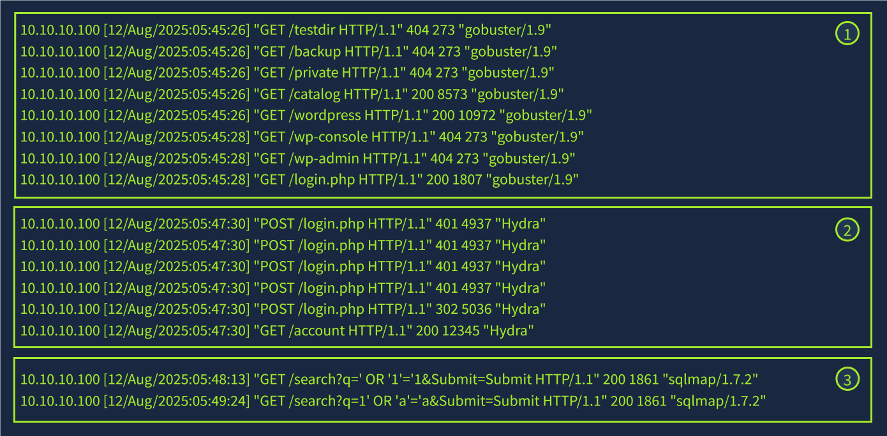
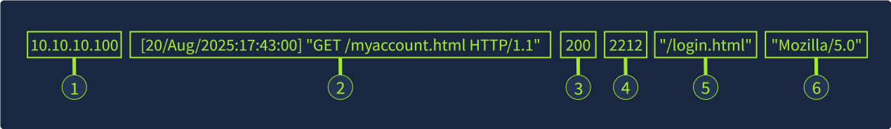
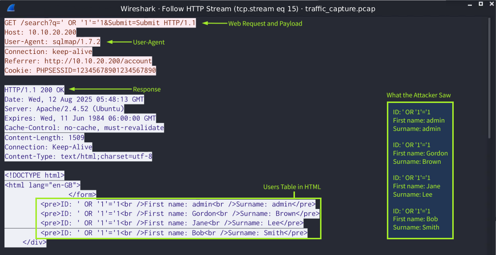
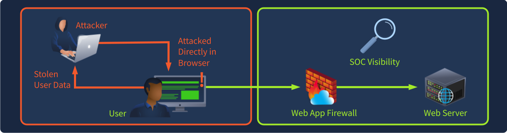
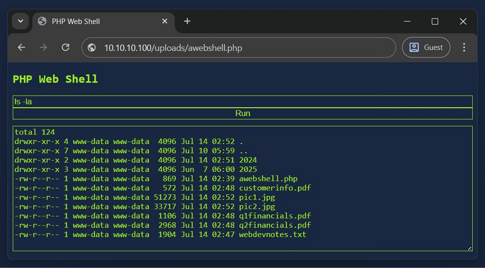
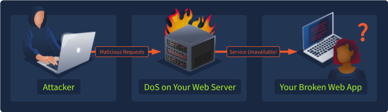
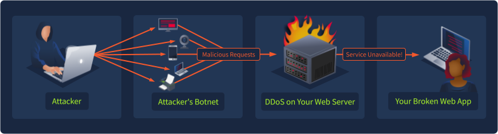
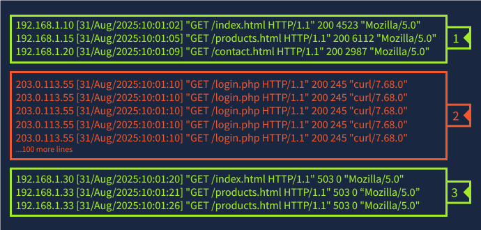

Web Incident Response — From the URL to the Investigation
Every organisation's front door is a web application, open to the entire internet on purpose. This session follows one continuous journey: understand how the web works, see how it breaks, watch the attack happen, perform the attack in a lab, then turn around and analyse the evidence, detect it, and investigate it — as a SOC analyst and incident responder, not a penetration tester.
You have finished Session 8 (network evidence) and Session 7 (email). You can read a packet and a log line. This session assumes that and adds the layer sitting on top of them: the web application — the most attacked, most exposed, and most business-critical surface most organisations own.
How this session works — the SOC learning journey
This is not a hacking course. Every attack you learn to perform exists here so that you can learn to see it, prove it, and respond to it. Keep that order in mind on every page.
The nine steps, every time
Whether we are looking at SQL injection or an insider threat, the shape of the learning is the same:
You cannot call anything abnormal until you have seen normal. Every attack page in this session opens with the normal request, log line, or behaviour — and then shows you the same thing gone wrong. Train your eye on the baseline and the anomaly announces itself.
Web servers log the request line — method, path, query string, status — but they do not record the body of POST requests. A password, an uploaded file, a JSON payload: the log shows that the request happened, never what was in it. Half of this session is learning where that blind spot is and which other evidence source (packet capture, WAF, endpoint) fills it.
Web Fundamentals
What the web is · how websites work · user ↔ server · DNS · HTTP/HTTPS · the complete flow
What actually happens when you open a website
You type tryhackme.com and press Enter. In under a second a dozen systems cooperate to put a page on your screen. As a responder, you need a mental model of that second, because every web attack is a deliberate abuse of one step in it.
At the highest level there are just two halves to any website:
| Half | What it is | Runs on | What it means for you |
|---|---|---|---|
| Front end (client-side) |
HTML (structure), CSS (appearance), JavaScript (behaviour) — what your browser renders. | The user's machine | Attacker-controllable, and largely invisible to the SOC. This is why client-side attacks (XSS, clickjacking) are hard to detect from logs. |
| Back end (server-side) |
Application code, web server, database and supporting infrastructure that process the request. | The organisation's machines | Logged and monitored. Nearly all our detection lives here — which is why this session spends more time on server-side attacks. |
We will cover client-side attacks, but with less log evidence, because the SOC genuinely cannot see most of what happens in a victim's browser. That's not a gap in the teaching — it is the reality of the job, and knowing where you are blind is itself a skill.
The three things you must be able to harden
A useful second model (from the defender's side) splits the server half into three layers — because each is a different place to apply a control:
- Application — the code: secure coding, input validation, access control.
- Web server — Apache / Nginx / IIS: access logging, the WAF, the CDN.
- Host machine — the OS underneath: least privilege, hardening, endpoint protection.
Hold on to these three names. When we reach containment and eradication, every fix lands on one of them.
DNS — the internet's address book
Your computer cannot talk to tryhackme.com; it can only talk to an IP address like 104.26.10.229. DNS is the lookup that turns the name you remember into the number the network needs. Forge the address book, and you redirect the mail.
Reading a domain name right-to-left
Domains are hierarchical, and you read them from the right:
- TLD (top-level domain) — the right-most part: .com, .org, or a country code like .co.uk.
- Second-level domain — in tryhackme.com, the tryhackme part. Max 63 characters; letters, digits, hyphens only.
- Subdomain — to the left: admin.tryhackme.com. A domain can have any number of these (whole name ≤ 253 characters).
Attackers register lookalikes inside these exact constraints. Read tryhackme.com.login-verify.xyz right-to-left: the real registrable domain is login-verify.xyz — not TryHackMe. The ability to find the true domain in a long hostname is a genuine day-one analyst skill and the mechanism behind most phishing URLs.
Record types you will meet in alerts
| A / AAAA | name → IPv4 / IPv6 address | “where did this host actually connect?” |
| CNAME | name → another name | dangling CNAMEs enable subdomain takeover |
| MX | name → mail servers (with priority) | email routing (Session 7 link) |
| TXT | free text — holds SPF / DMARC / DKIM | the same email-authentication records you met in Session 7 live here |
What happens on a lookup — and where it can be poisoned
Follow the request through the five hops. Each cache along the way is both a performance win and an attack surface:
DNS in Detail — Task 5 gives an in-browser query builder. Look up the A, CNAME, MX and TXT records of a domain, then run the same lookups locally with dig / nslookup and confirm they match. Then ask: “an alert says a host resolved evil.example.com — which record type tells me where it actually connected?” Source: TryHackMe · DNS in Detail (free room)
HTTP & HTTPS — the conversation with the server
Once DNS gives your browser the IP, it opens a conversation using HTTP: a request goes out, a response comes back. Learn this exchange cold — it is the single most important “normal” in the whole session.
The URL is an instruction with seven parts
Every attack lives in one of these parts, so learn to point at them:
| Scheme | http / https | HTTPS = encrypted and verifies server identity |
| Host | tryhackme.com | typosquatting lives here |
| Port | 80 / 443 (1–65535) | — |
| Path | /view-room | path traversal lives here |
| Query string | ?id=1 | user-editable → SQLi / XSS live here |
| Fragment | #task3 | client-side only |
The baseline exchange — commit this to memory
Request (client → server)
GET / HTTP/1.1 Host: tryhackme.com User-Agent: Mozilla/5.0 Firefox/87.0 Referer: https://tryhackme.com/ (blank line ends the request)
Response (server → client)
HTTP/1.1 200 OK Server: nginx/1.15.8 Content-Type: text/html Content-Length: 98 <html>…</html>
The User-Agent, Referer and any request body are set by the client — so they can be forged. This is exactly why tools like Hydra, gobuster, sqlmap and curl show up in the logs of the labs later: a lazy attacker leaves the tool name in the User-Agent, and a careful one changes it. The Server: header is version disclosure — free reconnaissance handed to the attacker.
Methods, and why HTTPS is more than “encrypted”
The four you will see constantly: GET (read), POST (create/submit), PUT (update), DELETE (remove). HTTPS adds two guarantees, and the second is the one people forget:
- Confidentiality — nobody in the middle can read the data.
- Identity — you are talking to the real server, not an impostor.
Because HTTPS encrypts the body, a plain packet capture stops being readable — which is exactly why a WAF has to terminate TLS to inspect traffic, and why, later in the session, network analysis of an HTTPS attack needs the keys. Encryption protects users and blinds defenders; both are true.
Cookies, and the sentence the rest of the session depends on
HTTP is stateless — the server does not remember your last request. To recognise you, it sends a Set-Cookie header, and your browser returns that cookie on every future request. For a logged-in user, that cookie is a session token — a secret that stands in for your password.
If statelessness means the cookie is your logged-in identity, then stealing the token = becoming the user. That single fact is the payoff of XSS, the reason CSRF works, and the point of session-fixation attacks. Two defences follow directly: HttpOnly (JavaScript cannot read the cookie, defeating theft) and Secure (cookie only sent over HTTPS). Remember this box — we will call back to it at least four times.
HTTP in Detail — Task 7 is an in-browser request emulator. Make a GET to /room, a DELETE to /user/1, and a PUT to /user/2 setting username=admin. Notice nothing stops you changing /user/1 to /user/2 — hold that thought; it has a name (IDOR) and we meet it in Section 3. Source: TryHackMe · HTTP in Detail (free room)
Status codes — the analyst's radar
The first line of every response carries a three-digit status code. To a user it means “did it work?”. To an analyst, patterns of status codes are the earliest, cheapest signal that an attack is underway.
The five families and the codes that matter
| Range | Family | Codes you will actually chase |
|---|---|---|
| 2xx | Success | 200 OK · 201 Created |
| 3xx | Redirection | 301 Moved · 302 Found (often “login succeeded, redirecting”) |
| 4xx | Client error | 400 Bad Request · 401 Unauthorised · 403 Forbidden · 404 Not Found |
| 5xx | Server error | 500 Internal Error · 503 Service Unavailable |
The same codes, read as an analyst — the hinge of this session
This table is where Section 1 connects to everything after it. Every attack we detect later is legible as a status-code pattern — and each row is backed by a lab you will actually run:
| Pattern in the log | What it means | Seen in |
|---|---|---|
| many 404s from one IP, then a 200 | directory fuzzing that found something | Detecting Web Attacks |
| repeated 401, then a 302 | brute force that finally succeeded | Detecting Web Attacks · SIEM |
| 200 on an unexpected .php in an upload folder | a web shell being used | Detecting Web Shells |
| a sudden wall of 503 | the service is exhausted — DoS/DDoS | Detecting Web DDoS |
| 500 spike after odd input | injection probing that broke a query | SQL injection |
You have just turned a memorised list of numbers into a detection skill. When we reach Section 3, you will not be learning these patterns for the first time — you will be recognising old friends. Keep this table open as you work through the attacks.
The complete journey — URL to rendered page
Now assemble the pieces. This is the whole point of Section 1: to hold in your head the ten stages a request passes through — because every attack in this session is the abuse of exactly one of them. We will refer back to these stage numbers on every attack page.
Every attack page names a stage. SQL injection “reaches stage 8.” A web shell “is planted at stage 7 and used through stage 6's logs.” XSS “fires at stage 10, where we're blind.” This is your map — when an attack feels abstract, find its stage here and it becomes concrete.
You type a name → DNS turns it into an address → TLS secures and verifies the connection → HTTP carries a request the attacker fully controls → the edge may filter it → the web server logs the line but not the body → the app and database do the real work (and take the real damage) → a response with a telltale status code comes back → the browser renders it, running JavaScript we cannot see. Ten stages. Now let's break them.
Web Attacks & the OWASP Top 10
Why web applications become vulnerable — and what each weakness looks like from the SOC
Why web applications are vulnerable at all
Section 1 ended with a ten-stage journey. Notice what stages 4 and 7 have in common: the application receives data it did not create, and then acts on it. Almost every vulnerability in this section is a variation of one mistake:
What OWASP is, and which list we use
The OWASP Top 10 is a community-built, evidence-based list of the ten most critical web application security risks. It is not a list of attacks — it is a list of categories of weakness. We teach the 2021 edition, which regrouped the older 2017 list around root causes rather than symptoms.
| 2021 change | What it tells you |
|---|---|
| Broken Access Control jumped to #1 | Authorisation flaws are now the most commonly found issue of all — and they are almost invisible to signature-based detection. |
| XSS was folded into Injection | OWASP now treats "untrusted data interpreted as code" as one root cause, whether the interpreter is SQL or a browser. |
| New: Insecure Design | Some systems are not built wrong — they are designed wrong. No patch fixes a missing control. |
| New: Logging & Monitoring Failures | ⭐ OWASP formally recognises that failing to detect is itself a vulnerability. That is our job, on their list. |
| New: SSRF as its own entry | Serious enough, and distinct enough, to stand alone. |
Every other item is something a developer must fix. A09 — Security Logging and Monitoring Failures — is something you fix. When you finish this session and go argue for better web logging, you are not asking for a nice-to-have; you are remediating an OWASP Top 10 risk.
How every item on this section is presented
Each of the ten gets the same ten questions answered, so you can compare them fairly — and each ends with the two that matter most to us: how defenders detect it and how it is prevented. Each also gets a diagram showing the normal flow, the malicious flow, and exactly where the weakness lives.
A01 — Broken Access Control
The application knows who you are, but never checks whether you are allowed to touch this particular thing. Authentication answers "who?"; authorisation answers "may you?" — and this is what happens when the second question is never asked.
Users can act outside their intended permissions — reading, modifying or deleting records that belong to someone else, or reaching admin functions as a normal user.
Authorisation is enforced in the UI (hiding a button) or assumed from authentication, instead of being checked on the server for every object on every request.
Stage 7 — the application layer. Anywhere an object is addressed by an identifier: ?id=, /api/user/1, a filename, an account number, a hidden form field.
Other users' data, admin functionality, or the ability to modify records they don't own — usually as a stepping stone to a full account takeover.
They change a value and watch the response. id=1 → id=2. A 200 instead of a 403 is the whole discovery process. Also: browsing to /admin directly.
Enumerate identifiers sequentially and harvest whatever comes back. No payload, no injection, no malformed request — just a legitimate request with a different number in it.
The application returns data or performs an action for a record the attacker has no right to. Repeat in a loop and it becomes bulk data theft.
Mass disclosure of customer records, privilege escalation to admin, unauthorised transactions. Frequently the root cause of large "API leaked all our users" breaches.
Behavioural, not signature. One session touching an abnormal number of distinct object IDs in a short window. Hunt: count distinct id values per session — stats dc(object_id) by session — and alert on outliers. Also watch for 403 → 200 transitions on the same path, and any non-admin session hitting admin routes.
Deny by default. Enforce ownership checks server-side on every object access, never trust an identifier from the client, use unguessable references where practical, and log all access-control failures so A09 doesn't hide A01.
In Section 1 you used the HTTP emulator to send DELETE /user/1 and PUT /user/2. Nothing asked whether those users were yours. That was Broken Access Control, before it had a name. You will do it again deliberately in the PortSwigger lab in Section 5.
There is no malicious string to match on. The request is well-formed, authenticated, and returns 200 OK. A WAF will never flag it. If your only detection strategy is pattern matching, the number-one item on the OWASP list is completely invisible to you.
A02 — Cryptographic Failures
Formerly "Sensitive Data Exposure". OWASP renamed it deliberately: exposure is the symptom; the cause is data that was never properly protected in transit or at rest.
Sensitive data is transmitted or stored without adequate cryptographic protection — or with protection that is obsolete, misconfigured, or incorrectly implemented.
Plain HTTP on internal pages, TLS that permits downgrade, passwords stored as MD5/SHA-1 or plaintext, hard-coded keys, home-made "encryption", secrets committed to source control.
Stage 3 (the transport) and stage 8 (storage). Also backups, log files that record tokens, and error pages that echo secrets.
Credentials, session tokens, payment data, personal information — anything that is valuable precisely because it was supposed to be secret.
Check whether the login page is HTTPS. Inspect the certificate and supported ciphers. Look for tokens in URLs. After any database access, check whether the password column is readable or trivially crackable.
Passive capture on the network path, or offline cracking of a stolen hash dump. Note that neither step requires exploiting the application again — the damage compounds after the initial breach.
The attacker holds valid credentials or data in cleartext. Because people reuse passwords, this often extends the breach into other systems entirely.
Regulatory exposure (GDPR/PCI-DSS), mass credential compromise, and long-tail damage — a hash dump stolen today is still being cracked years later.
Mostly posture monitoring rather than event detection: alert on cleartext HTTP to sensitive endpoints, TLS versions/ciphers below policy, expired or self-signed certs, and secrets appearing in logs or repos. Post-incident, treat any DB access as a credential incident, not just a data incident — the response includes forcing a password reset.
HTTPS everywhere with HSTS; classify data and encrypt what matters at rest; hash passwords with a slow, salted algorithm (bcrypt/scrypt/Argon2); keep secrets in a vault, never in code; and don't store what you don't need.
A classic breach story runs: a misconfigured store exposes a database → the database holds card numbers in a recoverable form → an insider with legitimate access walks out with millions of records. Each individual failure looks minor. The chain is catastrophic. Remember this when we reach insider threat later in the course: A02 is what turns an access problem into a headline.
A03 — Injection
The application takes text from the user and mixes it into a command that some interpreter will execute — SQL, a shell, an LDAP query, a template, or the victim's own browser. The interpreter cannot tell the developer's instructions from the attacker's. In 2021, XSS lives here too.
Untrusted data is sent to an interpreter as part of a command or query, tricking it into executing unintended instructions or accessing unauthorised data.
Queries and commands are assembled by concatenating strings, instead of using parameterised APIs that keep data and instructions structurally separate.
Stage 7 (the app builds the command) and stage 8 (the interpreter runs it). For XSS, stage 10 — the interpreter is the victim's browser.
SQLi: the contents of the database. Command injection: execution on the host. XSS: the victim's session token — which, per Section 1, is the victim.
Submit a single quote and watch for an error or a changed response. Then boolean tests (OR 1=1 vs OR 1=2), then time delays if the response gives nothing away (blind injection).
Break out of the data context with a delimiter, append attacker-controlled logic, and comment out the rest of the original statement so it still parses.
Authentication bypass, whole tables returned via UNION, data modified or destroyed, and in some configurations command execution on the database host itself.
Total loss of database confidentiality and integrity. Historically the cause of some of the largest breaches on record, including supply-chain incidents affecting thousands of downstream organisations at once.
The most detectable item on this list — if it comes in a GET. Watch for quote characters, UNION/SELECT, comment markers (--, #) and encoded equivalents in query strings; a spike of 500s from one source (probing that broke a query); scanner User-Agents like sqlmap. WAF signature and heuristic rules both fire here. Caveat: a payload delivered in a POST body is invisible in access logs — you need the WAF or packet capture.
Parameterised queries / prepared statements — the actual fix, not a mitigation. Plus allow-list validation, least-privilege database accounts (so a successful injection reaches little), escaping on output for XSS, and CSP as defence in depth.
- Quote characters, --, or %27 in a query string
- UNION SELECT in any parameter, in any encoding
- A burst of 500 responses from a single client IP
- User-Agent naming a tool: sqlmap, nikto
- Identical requests differing only in a numeric or boolean payload (blind injection)
- Response-size changes on the same endpoint — a small page suddenly returning a large one
A04 — Insecure Design
Every other item is a control that was implemented badly. This one is a control that was never designed at all. You cannot patch your way out of a missing requirement.
Missing or ineffective security controls at the design level — the threat was never modelled, so no control exists to implement correctly.
No threat modelling, no abuse-case analysis, business requirements written only for the happy path, and security treated as a testing phase rather than a design input.
Stage 7 — but really it lives in the requirements document, months before any code exists.
Free goods, unlimited retries, bypassed workflow steps, refunds without returns — economic abuse rather than data theft.
They read the workflow and ask "what if I do this twice? out of order? with a negative number? and never finish?" No tooling required — just adversarial curiosity.
Perform a legitimate sequence of legitimate actions in an order or quantity the designer never anticipated. Nothing is malformed at any point.
The business logic produces an outcome that harms the organisation while the application reports complete success.
Direct financial loss, inventory manipulation, fraud at scale — and it may run for months because nothing ever "errors".
Only through business-context anomaly detection. Alert on outcomes, not requests: order totals below cost, discount stacking, one account redeeming an implausible number of coupons, refunds exceeding purchases. This requires the SOC to understand the business — the strongest argument in this session for analysts talking to product owners.
Threat modelling during design. Write abuse cases alongside use cases, enforce business limits server-side, add rate/quantity limits per workflow, and use a secure design pattern library so the same control isn't reinvented per feature.
If the attacker accessed something that wasn't theirs → Broken Access Control. If they did something that was theirs to do, but in a way nobody sanctioned → Insecure Design.
A05 — Security Misconfiguration
The software is fine. The way it was deployed is not. Default credentials, an open directory listing, debug mode left on in production, a storage bucket set to public.
Insecure default settings, incomplete hardening, unnecessary features enabled, verbose errors, or permissions left open anywhere in the stack.
Software ships insecure-by-default for convenience; environments drift; "temporary" debug settings become permanent; nobody owns the hardening checklist after go-live.
Stages 5–7: the CDN/WAF config, the web server config, the framework, the container, the cloud storage bucket.
The cheapest possible entry: an admin panel with default credentials, an exposed backup, or source code that reveals everything else.
Automated content discovery — a wordlist of common paths fired at the site. Tools leave a distinctive fingerprint: hundreds of rapid requests and a tool name in the User-Agent.
Enumerate → identify what responded 200 → use it. Often no exploitation is needed at all; the door was simply unlocked.
Administrative access, source code disclosure, or enough version information to select a working public exploit (which leads straight to A06).
Ranges from information disclosure to immediate full compromise — an admin console with default credentials is game over on first contact.
This is the easiest attack in the section to catch. Alert on a high rate of 404s from a single IP in a short window, then look for the 200 that follows — that is what the attacker found. Watch for scanner User-Agents (gobuster, ffuf, dirb, nikto), requests to /admin, /.git/, /backup, and any successful login to an admin path from an unusual source.
Hardened, repeatable builds; remove unused features and sample content; change every default credential; disable directory listing and debug mode; generic error pages; suppress the Server version header; and audit configuration continuously, not once.
In the Detecting Web Attacks lab, the log opens with a directory fuzz from gobuster/1.9 — a run of 404s with a handful of 200s (/catalog, /wordpress, /login.php). Everything the attacker does afterwards depends on what that scan found. Catch A05 and you end the attack at stage one.
A06 — Vulnerable and Outdated Components
Your application is mostly other people's code. When a critical flaw is published in a library you depend on, the exploit becomes public the same day — and attackers scan the entire internet for it within hours.
Running software — libraries, frameworks, runtimes, servers — with known published vulnerabilities, or versions no longer supported.
Nobody maintains an inventory of what is deployed; transitive dependencies are invisible; patching is deferred for stability; end-of-life components are never replaced.
Stage 7, inside code you did not write but are fully responsible for.
Remote code execution with minimum effort. A public exploit for a widespread library is the highest-return attack available.
They don't target you — they scan everyone. Version disclosure (the Server header from A05, a stack trace, a JS file path) tells them whether you are worth a second request.
Send the published payload inside an ordinary-looking field. Because the vulnerable code is deep in a dependency, the application's own validation never sees anything unusual.
Typically code execution on the server, often followed immediately by an outbound connection to attacker infrastructure to fetch a second-stage payload.
Full server compromise, at internet scale, affecting every organisation using that component — this is the mechanism behind the largest coordinated exploitation events of recent years.
Two angles. Before: vulnerability scanning + an accurate software inventory (SBOM) tells you that you're exposed. During: because the inbound payload is hard to signature reliably, watch for the consequence — an unexpected outbound connection from a web server (DNS/LDAP/HTTP callback to an unknown host) and a web-server process spawning a shell. A server that suddenly starts initiating connections is the loudest quiet signal in this whole section.
Maintain an inventory; subscribe to advisories for what you actually run; patch on a defined SLA; remove unused dependencies; and add egress filtering so a successful exploit still cannot call home.
A05 leaks your version. A06 is what happens next. Suppressing the Server header is not security by obscurity here — it removes the cheap targeting signal that turns mass scanning into a confirmed target.
A07 — Identification and Authentication Failures
Weaknesses in proving who someone is: guessable passwords with no rate limiting, login pages that reveal which usernames exist, and session tokens that can be stolen, fixed or reused.
The application fails to reliably establish and maintain user identity — permitting credential guessing, session hijacking, or reuse of tokens that should be invalid.
No rate limiting or lockout, weak password policy, credential stuffing not considered, session IDs exposed in URLs, tokens that never expire or don't rotate on login, missing MFA.
Stage 4 (the credentials/token travel in the request) and stage 7 (the app decides whether to accept them).
A valid session. Once they have one, every subsequent request is legitimate — which is why this is such a clean way in.
Username enumeration first: if "invalid username" and "wrong password" produce different responses (or noticeably different timings), one unknown becomes two knowns. Then automated guessing against the confirmed account.
Automated tools submit credential pairs at high speed. Because the login body is a POST, the passwords tried are not in the access log — only that attempts occurred.
Account takeover. If the account is an administrator, the attacker inherits the whole application; if it's a normal user, it becomes a foothold for A01.
Data theft under a legitimate identity, fraudulent transactions, and — because activity now looks authentic — significantly delayed detection.
The canonical threshold query. Filter POSTs to the login path, bucket by time, count per source, alert over a threshold: stats count by clientip in 5-minute bins, where count > 25. Then the high-value refinement: alert on failures followed by a success. Enrich with User-Agent (tools like Hydra announce themselves) and geolocation. Also monitor impossible-travel logins and one IP attempting many different usernames (credential stuffing).
MFA is the single highest-value control here. Add rate limiting and progressive lockout, identical responses for invalid username vs. password, screening against breached-password lists, session rotation on login, and short idle timeouts.
filter → bin _time span=5m → stats count by entity → where count > N — you will use this exact skeleton for brute force, for web-shell hunting, and for DDoS. Learn it once here; it is the most transferable thing in the whole session.
A08 — Software and Data Integrity Failures
Code or data is accepted without verifying it hasn't been tampered with — an unsigned update, a third-party script loaded from someone else's server, or a serialized object rebuilt straight from a cookie.
Code and data are used without integrity verification: insecure deserialization, unsigned updates, and dependence on plugins or scripts from untrusted sources.
Native deserialization is convenient; CI/CD pipelines pull dependencies without pinning or signature checks; client-side state is trusted because it "came from us originally".
Stage 7 (the server rebuilds an object) and stage 10 (the browser loads a third-party script). Also the build pipeline, which is outside the request path entirely.
Privilege escalation via tampered state, or — in the worst case — remote code execution through a crafted serialized object.
Recognisable encodings in cookies or hidden fields (base64 that decodes to structured data, PHP/Java serialization markers). If it decodes to something readable and the app accepts an edit, it's unverified.
Decode, modify, re-encode, replay. For RCE, craft an object whose reconstruction triggers a chain of method calls (a "gadget chain") already present in the app's libraries.
Escalated privileges, forged application state, or code execution — and in supply-chain cases, malicious code shipped to every customer as a legitimate signed-looking release.
At the low end, an ordinary user becomes an admin. At the high end, a compromised build affects thousands of downstream organisations simultaneously.
Hard from web logs — the tampering is inside a cookie or POST body. Practical angles: alert on deserialization exceptions in application logs (failed gadget attempts are noisy before a successful one), on sessions whose privilege level changes without an authorisation event, and on the consequences (admin actions from an account never granted admin). For supply chain, monitor build-pipeline integrity and use Subresource Integrity so a tampered third-party script simply fails to load.
Don't deserialize untrusted input; if you must, use a data-only format (JSON) with strict schemas. Sign and verify serialized state, updates and artefacts. Pin dependencies, verify signatures in CI/CD, and apply SRI to external scripts.
A09 — Security Logging and Monitoring Failures
The only item on the list that is not a developer's problem. This is the vulnerability that says: the attack happened, the evidence existed or should have — and nobody saw it. This entry is the SOC's job description written as a risk.
Security-relevant events are not logged, not centralised, not monitored, or not retained long enough to detect and investigate a breach.
Logging is treated as a debugging feature; alerting is never tuned so real events drown in noise; retention is set by storage cost; and nobody tests whether an attack would actually raise an alert.
Stage 6 — where evidence is created — plus everywhere that evidence should have been shipped, stored and watched.
Time. Every hour without detection is another hour of access. Mature attackers actively help this along by clearing logs.
They probe noisily and see whether anything changes. No block, no challenge, no call from your SOC — that silence tells them they can proceed at their own pace.
This isn't exploited directly — it amplifies every other item on this list, turning a contained incident into a long-running compromise.
Extended dwell time, and — critically — no evidence left to reconstruct what happened. You cannot scope a breach you cannot see.
Breaches discovered by outsiders rather than by you; inability to determine what data was taken; regulatory penalties for failing to demonstrate what occurred.
You detect it by testing yourself. Run a controlled attack simulation and ask: did an alert fire? Was the evidence there? Could we build a timeline? Audit for coverage gaps: are login failures, access-control denials, admin actions and file uploads all logged? Do POST-heavy endpoints have compensating telemetry (WAF or packet capture) given bodies aren't logged?
Log authentication events, access-control failures and high-value actions with enough context to investigate. Centralise to a SIEM the attacker can't reach, normalise timestamps to UTC, set retention to match realistic investigation windows, build and tune alerts, and rehearse the response.
Every other entry gets fixed by someone else. When you leave this session and ask for web logs to be shipped to the SIEM, for POST endpoints to get WAF coverage, or for 90-day retention — you are not making an operational request. You are remediating OWASP A09. Use that language; it changes the conversation.
A10 — Server-Side Request Forgery (SSRF)
You give the application a URL; it fetches that URL for you. The trick is that the server sits inside the network — so the attacker borrows its position to reach things they never could from outside.
The application fetches a remote resource using a URL supplied by the user, without validating where that URL points.
Legitimate features need to fetch URLs — webhooks, link previews, PDF generators, image importers, stock checkers. The destination is treated as data rather than as a security decision.
Stage 7, but the impact lands outside the normal request path entirely — on the internal network the server can reach.
Cloud instance credentials from the metadata endpoint, internal admin interfaces that assume "inside = trusted", and a map of the internal network via port scanning by proxy.
Any parameter containing a URL. They point it at a host they control and watch for the callback — if the server connects, SSRF is confirmed even when the response is never shown to them (blind SSRF).
Replace the intended URL with an internal one — 127.0.0.1, an RFC1918 address, or the cloud metadata IP — and let the server's network position do the rest.
Internal resources are returned to the attacker, or credentials are harvested that grant direct access to cloud infrastructure — often a far bigger prize than the web app itself.
Pivot from a single web vulnerability to cloud-account compromise. This is why OWASP promoted it to its own entry despite relatively low incidence: when it works, the blast radius is enormous.
Watch egress, not ingress. Alert on the web server initiating connections to 169.254.169.254, localhost, or internal ranges it has no business reaching; on DNS lookups for attacker-controlled domains from a server; and on any new outbound destination for a host whose normal profile is inbound-only. Same detection shape as the A06 callback and a reverse shell — learn "server started talking outbound" once and it catches three different attacks.
Allow-list permitted destinations rather than blocking bad ones; reject internal IP ranges and redirects to them; disable unused URL schemes; enforce egress filtering at the network layer; and require session tokens on the cloud metadata service (IMDSv2-style).
The OWASP Top 10, read as a detection problem
Ten weaknesses, ranked by how visible they are to you. This is the table to keep — it converts a developer's checklist into an analyst's worklist.
| Item | Primary detection signal | Visibility |
|---|---|---|
| A05 Misconfiguration | burst of 404s from one IP, then a 200; scanner User-Agent | 🟢 High — loud and early |
| A07 Auth failures | many 401s then a 302 from one source; threshold query | 🟢 High |
| A03 Injection | payload visible in GET query strings; 500 spikes; WAF hits | 🟡 High for GET, low for POST |
| A06 Vulnerable components | unexpected outbound connection; server spawns a shell | 🟡 Medium — detect the effect, not the payload |
| A10 SSRF | server connects to metadata IP / internal ranges | 🟡 Medium — egress telemetry only |
| A02 Crypto failures | cleartext HTTP, weak TLS, secrets in logs | 🟡 Medium — posture, not events |
| A08 Integrity failures | deserialization errors; privilege changed with no auth event | 🔴 Low |
| A01 Broken access control | one session enumerating many object IDs; 403→200 | 🔴 Low — behavioural only |
| A04 Insecure design | business outcomes that shouldn't be possible | 🔴 Low — needs business context |
| A09 Logging failures | — | ⚫ None — it is the absence of detection |
Read the visibility column top to bottom. The two highest-ranked risks on the OWASP list (A01 and A02) are among the hardest for a SOC to see, while the ones we detect most easily (A05, A07) rank in the middle. Detection difficulty and business risk are not the same axis. If you only chase what's easy to alert on, you will systematically miss the biggest risks — which is precisely why behavioural analytics and business context matter, and why "no alerts" never means "no attacks".
- Did the payload arrive in a GET (logged) or a POST (not logged)?
- Is there a status-code pattern that gives it away?
- If neither — what behaviour or outbound connection would betray it?
Section 3 now takes ten of these weaknesses as they actually appear in the wild, and walks each one end-to-end: normal behaviour, the attack, the evidence it leaves, and the investigation.
The Most Common Real-World Web Attacks
Each one told as a complete story — normal behaviour → attack → evidence → investigation
Section 2 gave you categories of weakness. This section gives you the attacks that actually arrive at your organisation, in the order you tend to see them, each told the same way so you can compare them.
The template — every attack, seven questions
| Normal behaviour | What this feature does when nothing is wrong |
| Attack target | Which part of the app, and what the attacker wants from it |
| Vulnerability discovery | What tells the attacker this target is worth attacking |
| Attack flow | Step by step, conceptually |
| Why it succeeds | The technical reason the app allows it |
| SOC perspective | What appears in web logs · WAF · SIEM · HTTP · network · auth logs · endpoint |
| Incident response | How you investigate and what you do about it |
They are not ten separate events — they are one chain
Real intrusions rarely use a single technique. The lab evidence you will study shows three of these attacks inside one log file, from one attacker, in sequence:

Notice the User-Agent column changes with each phase. Notice the status codes tell the story on their own: 404s → a 200 (found something), 401s → a 302 (got in), then 200s with payloads in the query string (took the data). You learned to read all three patterns in Section 1. You can already triage this incident.
The fifteen, and where each lives in the journey
Ten form the core kill-chain; five more (11–15) round out the most important PortSwigger classes, each with a distinct detection lesson. Every one is told the same way.
Every attack below is read from this one line format. If you can point at each field, you can read every piece of evidence in this section.

Attack 01 — Content Discovery (Directory Fuzzing)
Before an attacker exploits anything, they need to know what exists. They ask your server about thousands of paths and let it tell them which ones are real. This is the noisiest thing an attacker ever does — and therefore your best chance to stop them early.
Walk it through — normal, then the weakness, then the attack
Target: the attack surface itself — admin panels, uploads, backups, .git. Anything the developers forgot is worth more than anything they secured.
04 Attack flow
- Attacker points a tool (gobuster, ffuf, dirb, nikto) at the site with a wordlist of common paths.
- The tool fires hundreds to thousands of requests per minute, each to a different path.
- Nearly all return 404. The tool records the handful that don't.
- Attacker reviews the hits: /catalog, /wordpress, /login.php, /uploads/.
- Every subsequent phase of the attack targets only what this scan found.
05 Why it succeeds
Because it is not an exploit — it is the web working as designed. HTTP is request/response; you may ask about any path. Nothing is broken. The only real failures are the content that shouldn't be reachable (OWASP A05) and the absence of rate limiting.
06 SOC perspective
| Web server logs | The primary source, and unmistakable. A huge burst of 404s from one client IP inside a short window, then one or more 200s. Requests arrive milliseconds apart with no Referer — no human browses like that. |
| User-Agent | Often names the tool outright: gobuster/1.9, ffuf/2.1.0, Nikto. Careful attackers spoof a browser UA — so never rely on this alone; rely on the rate. |
| WAF logs | Rate-based rules and IP-reputation rules typically fire here. This is where a WAF earns its cost, because it can block mid-scan. |
| SIEM alerts | The threshold query: status=404 | bin _time span=1m | stats count by clientip | where count > 50. Then the important second step — pivot to the same IP's 200s. That short list is your attacker's roadmap. |
| HTTP requests | Sequential, alphabetically-ordered paths from a wordlist. Identical headers on every request. |
| Network traffic | Sustained high connection count from a single source; visible as a burst in flow data even without payload inspection. |
| Auth logs | Nothing — no authentication is attempted at this stage. |
| Endpoint telemetry | Nothing — the server only reads files it already serves. No process spawns. |
07 Incident response
- Confirm it is a scan, not a broken link. One IP, high 404 rate, no Referer, non-browser UA. A broken link produces repeated 404s to the same path from many users; a scan produces 404s to many different paths from one user.
- List what the scan found. Filter that IP to status=200 or 403. This is the single most valuable action — it tells you what the attacker now knows.
- Check whether they came back. Search the same IP after the scan window for targeted requests. Recon alone is background noise; recon followed by a POST to a discovered login page is an incident.
- Assess each discovered path. Should /backup/ or /.git/ be reachable at all? Each finding is an A05 remediation ticket.
- Contain if active: block or rate-limit the source IP at the WAF; expect a rotation to a new IP, so also add a rate-limit rule that isn't IP-specific.
- Document the source IP, time window, hit list and any follow-up activity — this becomes the timeline's first entry.
Internet-facing sites are scanned constantly; a lone scan with no follow-up is usually informational, not an incident. What escalates it is what happened next from the same source. Train yourself to always ask the second question rather than closing the ticket at "scan detected".
Attack 02 — Brute Force & Credential Stuffing
The login page does exactly what it was built to do: check a username and password. The attacker simply asks it to do that ten thousand times.
Walk it through — normal, then the weakness, then the attack
Target: the login endpoint found during recon. One working credential pair makes everything afterwards look legitimate.
04 Attack flow
- Build a target list: usernames from enumeration, OSINT, or the company email format.
- Choose a strategy — brute force (many passwords against one account), password spraying (one common password against many accounts, to dodge lockout), or credential stuffing (username/password pairs from previous breaches).
- Automate with Hydra, Burp Intruder or a script; submit POSTs at high speed.
- Watch for the response that differs — a different status code, size or redirect.
- On success, capture the session cookie. From this point the attacker is that user.

05 Why it succeeds
Three failures compound: no rate limiting (unlimited guesses), weak passwords (the guess space is tiny — password123 is in every wordlist), and no MFA (the password is the only thing standing in the way). Any one of the three, fixed, would have stopped it.
06 SOC perspective
| Web server logs | Many POSTs to the login path from one IP, then a status change. The signature is 401/200 × N, then a 302. In the lab: 167.172.41.141 made 160 requests with User-Agent Hydra. |
| The passwords tried | Not in the log — ever. They are POST body data. The log proves attempts happened; it cannot tell you what was submitted or whether the winning password was weak. |
| WAF logs | Rate-limit rules fire; a good WAF can serve a CAPTCHA challenge instead of blocking, which stops automation while letting real users through. |
| SIEM alerts | The canonical query: method=POST uri_path="/login" | bin _time span=5m | stats count by clientip | where count > 25. Then the high-value refinement: alert on failures followed by a success. Failures alone are noise; failures then a 302 is a compromise. |
| HTTP requests | Identical headers, identical content-length, only the credential differing. No Referer, or a static one. |
| Network traffic | Where you recover the actual credentials — as above. Also reveals whether the session cookie was subsequently reused from a different IP. |
| Auth logs | The application's own authentication log is the cleanest source if it exists: failed-login events with usernames, then a success. Correlate with the web log by timestamp and IP. |
| Endpoint telemetry | Nothing at this stage — no code runs on the server. It becomes relevant only if the compromised account is later used to upload something. |
- Login POST volume from one IP far above baseline
- Many different usernames from one IP (credential stuffing, not brute force)
- One password tried across many accounts (password spraying — stays under lockout thresholds)
- Tool User-Agents: Hydra, python-requests, curl
- Login success from a country or ASN the user has never used before
- Successful login with no preceding GET of the login page — a browser would have fetched the form first
07 Incident response
- Determine whether it succeeded. This is the only question that matters first. Look for the status-code change (302/200) at the end of the failure run, or a session established from that IP.
- If it failed: block/rate-limit the source, confirm lockout policy actually works, and log it as an attempted intrusion. No user impact.
- If it succeeded — treat it as account compromise immediately. Identify the account, and pivot to everything that session did afterwards. The brute force is the beginning of the incident, not the end.
- Contain: invalidate the session token (not just a password reset — an active session may survive one), force a password change, enable MFA on the account, block the source.
- Scope: check the same source IP against other accounts, and check the compromised account for data access, changes to email/recovery settings, or new API keys — attackers establish persistence quickly.
- Eradicate & harden: rate limiting on the login endpoint (e.g. 5 attempts per minute per IP), account lockout with backoff, MFA, identical responses for bad username vs bad password, and screening against breached-password lists.
Failed logins are noise. Failed logins followed by a successful one are an incident. Build your alert on the transition, not on the count alone — otherwise you will either drown in alerts or miss the one that mattered.
Attack 03 — SQL Injection
The search box was built to look up products. The attacker uses it to look up everything — because the application glued their text directly into a database instruction and the database has no way to tell the difference.
Walk it through — normal, then the weakness, then the attack
Target: any input that reaches a query — search, login, ?id=, filters. The prize is the database itself.
04 Attack flow
- Probe — submit ', observe error or anomaly.
- Confirm logic control — ' OR '1'='1 returns everything, proving the attacker now writes part of the query.
- Enumerate structure — determine column count and types (often via ORDER BY or UNION SELECT NULL,NULL…).
- Extract — UNION SELECT username, password FROM users appends the real prize onto the product results.
- Escalate — crack the retrieved hashes (see A02), then log in legitimately. The intrusion goes quiet from here.

05 Why it succeeds
The query is assembled with string concatenation. The apostrophe closes the intended string, so everything after it is read as instruction rather than data. The database is not fooled or exploited — it faithfully executes the query it was handed. Compounding factors: verbose errors (free reconnaissance) and an over-privileged DB account (so one injection reaches every table).
06 SOC perspective
| Web server logs | Excellent — if the payload came in a GET. The query string is logged in full, so you see the attack verbatim: /search?q=' OR '1'='1. Also watch response size: the same endpoint suddenly returning a much larger page means the extra rows came back. |
| Status codes | A spike of 500s from one IP during the probing phase, then 200s once the payload is syntactically valid. That 500-then-200 shift is the moment they got it working. |
| WAF logs | Strong here. Signature rules catch UNION SELECT, comment markers and quote patterns; heuristic rules catch long query strings full of special characters. Caveat: encoding and case-toggling evade naive signatures — which is why anomaly and IP-reputation rules matter too. |
| SIEM alerts | Search query strings for SQL keywords and their encoded forms (%27, %20OR%20). Alert on 500-rate per client IP. Correlate a WAF signature hit with a subsequent large-response 200 from the same source — that pairing means the attack likely worked. |
| HTTP / network | The decisive evidence. Packet capture shows the response body — i.e. exactly which records were disclosed. Logs tell you an attack happened; the capture tells you what was stolen, which is what breach notification depends on. |
| Database logs | If query logging is enabled, the smoking gun: the malformed query as executed. Also check for unusual query volume or full-table scans from the web app's account. |
| Auth logs | Nothing directly — but expect later legitimate logins using credentials cracked from the dump. This is how a SQLi incident quietly becomes an account-compromise incident. |
| Endpoint telemetry | Usually nothing, unless the attacker escalated to command execution via database functions (e.g. xp_cmdshell) — then you'd see the DB process spawning a shell. |
07 Incident response
- Establish whether data was actually returned, not just whether payloads were sent. Compare response sizes for the affected endpoint; pull packet capture if available. "Attempted" and "successful" are different incidents.
- Scope the data. Which tables were reachable by that DB account? Assume everything it could read was read. This determines regulatory notification.
- Contain: block the source, deploy a WAF rule for the specific payload pattern, and — if exfiltration is confirmed and ongoing — consider taking the endpoint offline. Availability loss beats continued data loss.
- Treat every credential in that database as compromised. Force resets. This is the A02 link: stolen hashes keep paying the attacker long after you close the ticket.
- Eradicate: convert the vulnerable query to a parameterised statement — the actual fix. Then reduce the DB account's privileges, disable verbose errors, and re-scan for the same pattern elsewhere in the codebase.
- Verify: retest the endpoint, confirm the WAF rule fires, and add a detection rule so a recurrence alerts immediately.
Everything above assumes the payload arrived in a GET. Move the same attack into a POST body — a login form, a JSON API — and your access logs show a perfectly ordinary POST /api/search 200. Nothing else. For POST-heavy applications, the WAF and packet capture are not "nice to have"; they are the only place the attack exists.
Attack 04 — Cross-Site Scripting (XSS)
Every other attack in this section targets your server. This one targets your users — and it executes in a place your SOC cannot see.

Walk it through — normal, then the weakness, then the attack
Target: anywhere user input is reflected into a page — and through it, the next visitor’s session token.
04 Attack flow
Three variants, in ascending order of how much they should worry you:
| Type | How it reaches the victim | SOC visibility |
|---|---|---|
| Reflected | Payload is in a crafted URL the victim must click (phishing, malicious link) | 🟡 Payload appears in GET query strings in your logs |
| Stored | Payload saved in the database (a comment); fires for every visitor automatically | 🔴 Arrives via POST — invisible in access logs |
| DOM-based | Client-side JavaScript writes attacker-controlled data into the page; payload may sit after a # fragment | ⚫ Never reaches your server at all |
- Attacker submits <script>…</script> into an unfiltered field.
- The application stores or reflects it without encoding the output.
- A victim loads the page. Their browser cannot distinguish attacker markup from developer markup — so it executes it.
- The script reads document.cookie and sends the session token to the attacker's server.
- The attacker replays that cookie and is now logged in as the victim — with no password and no login event.
05 Why it succeeds
Output is not encoded, so data crosses into code — the same root cause as SQL injection, with the browser as the interpreter instead of the database. It pays off because HTTP is stateless and the cookie is the identity (Section 1): stealing the token is equivalent to stealing the account. Two missing defences make it worse — no HttpOnly flag (so JavaScript can read the cookie) and no Content-Security-Policy (so injected scripts are allowed to run).
06 SOC perspective
TryHackMe's own material states it plainly: detecting client-side attacks from a SOC perspective is "often difficult or even impossible without additional browser-side security controls or endpoint monitoring." Do not teach a confident detection story for XSS that does not exist. Teach the real one: partial visibility, and prevention doing most of the work.
| Web server logs | Reflected XSS only: the payload appears in the GET query string — ?q=<script> or its encoded form %3Cscript%3E. Stored XSS: nothing, because it arrived in a POST body. |
| The actual attack | Invisible. The script executing, the cookie being read, and the token leaving the victim's browser all happen on a machine you do not control and do not log. |
| WAF logs | Your best server-side control. Heuristic rules flag script tags, event handlers (onerror=, onload=) and encoded angle brackets in any parameter — including POST bodies, which the WAF can inspect and the access log cannot. |
| SIEM alerts | Alert on script-like patterns in URLs and WAF XSS signatures. The far more valuable rule: the same session token used from two different IPs or geographies — that is stolen-cookie reuse, and it catches the consequence when you missed the cause. |
| HTTP responses | Rarely inspected in practice, but the definitive evidence: the payload appearing in the response body proves the app reflected it unencoded. |
| Network traffic | The outbound side is your real signal: victim browsers making requests to an unfamiliar external host immediately after loading one of your pages. That is the exfiltration channel. |
| Auth logs | An account active without a corresponding login event — the classic fingerprint of session hijacking rather than credential theft. |
| Endpoint telemetry | Where visibility genuinely exists, if you have it: browser isolation, EDR with browser modules, or CSP violation reports sent back to you. |
Content-Security-Policy-Report-Only with a report-uri makes victims' browsers tell you when a script tried to run from an unexpected source. It is the one practical way to get telemetry from stage 10 — a prevention control doubling as your only client-side sensor. Recommend it whenever XSS risk is on the table.
07 Incident response
- Identify the injection point and the variant. Reflected (a link was distributed) or stored (it fires for everyone)? Stored is far more urgent — it is actively attacking users right now.
- For stored XSS, remove the payload from the database immediately. This is containment; every page load until then is another victim.
- Scope the victims. Who loaded the affected page while the payload was live? Web logs give you that list even though they cannot show the exploitation.
- Assume session compromise for those users. Invalidate their sessions and force re-authentication — a password reset alone does not kill a stolen cookie.
- Hunt the consequence: search for one session token used from multiple IPs, and for account activity with no matching login event.
- Eradicate: context-aware output encoding at the injection point, plus HttpOnly and Secure cookie flags, plus a Content-Security-Policy. Encoding fixes this bug; the flags and CSP limit the damage of the next one.
Attack 05 — File Upload → Web Shell
The most consequential attack in this section. An "upload your profile picture" feature becomes a remote terminal on your server — reachable from a browser, running as your web server's user, and persistent across reboots.
Walk it through — normal, then the weakness, then the attack
Target: any upload feature. The goal is arbitrary code execution — the top of the value chain.
04 Attack flow
This is the sequence, and it is the one you must be able to recognise in a log at a glance:

- Recon finds an upload feature and a writable, web-accessible directory.
- Attacker uploads a script — often a single-file PHP shell relying on system(), exec(), shell_exec() or passthru().
- POST succeeds with 200 — the file is now on disk.
- Attacker requests the uploaded file directly. The server executes it instead of serving it.
- Each subsequent GET carries a command: ?cmd=whoami, then ?cmd=ls, then enumeration and privilege escalation.

05 Why it succeeds
Two independent failures must both be present — which is also why you have two chances to stop it:
- Validation failure — file type/extension/content not properly checked (deny-list instead of allow-list, or trusting the client-supplied Content-Type).
- Configuration failure — the upload directory permits script execution. Fix this one and an uploaded shell is just a harmless file on disk.
06 SOC perspective
| Web server logs | The pattern is the detection. A POST to an upload endpoint returning 200, immediately followed by repeated GETs to a script file in an upload directory. Normal users never request .php files inside /uploads/ — that path should only ever serve images. |
| SIEM query | uri_path IN (*.php,*.asp,*.aspx,*.jsp) AND status=200 | stats count by uri, clientip | where count > 2 — scoped to upload directories. Same threshold skeleton as brute force, different filter. |
| User-Agent | Frequently curl or python-requests — the attacker is now scripting against their own shell, not browsing. A blacklisted UA hitting a file in /uploads/ is close to conclusive. |
| Query strings | Command parameters in the URL: ?cmd=, ?exec=, or base64-encoded equivalents. Repeated requests to one file with a changing parameter = an interactive session. |
| WAF logs | Can block the upload (file-type rules) and the interaction (command patterns in query strings). Note it cannot see what is inside the uploaded file unless configured for content inspection. |
| Endpoint telemetry | The strongest confirmation available. The web server process (apache2, php-fpm, w3wp) spawning a child shell (sh, bash, cmd.exe) is abnormal in almost every environment. On Linux, auditd also records the file write: ausearch -k web_shell shows the path and the owning account. |
| File system | A new script file with a recent timestamp in a content directory. Hunt: find /var/www -name "*.php" -newerct "2025-07-01" and grep -rE "eval\(|system\(|shell_exec\(" /var/www. |
| Network traffic | Command output flowing back in HTTP responses; later, an outbound connection when the attacker upgrades to a reverse shell or downloads tooling. |
The access log says "a POST created a file and something keeps requesting it." auditd says "this exact file was written to disk at this time by www-data." Neither alone is conclusive; together they are. This is what log correlation is for — and it is why the next section's project has you build a timeline from more than one source.
- A .php/.aspx/.jsp file requested from an upload directory
- POST to an upload endpoint followed within seconds by GETs to a new filename
- A file on disk that was not there yesterday — you are not looking for a file called shell.php, you are looking for one that is new
- Double extensions: image.jpg.php
- Web server process with a shell as a child process
- The shell downloading enumeration tooling (e.g. a privilege-escalation script) — escalate severity immediately; the attacker is moving from web to host
07 Incident response
- Treat as server compromise from the outset. Code has executed on your infrastructure — this is not a web-app bug ticket, it is an intrusion.
- Preserve evidence before you clean up. Copy the shell file, capture auditd/EDR records and the relevant log window. Deleting the file first destroys the chain of custody.
- Determine every command run. Reconstruct from the query strings in the access log and from process telemetry. This defines the scope of the incident.
- Contain: remove the shell, block the source IP, and — if the shell has been used interactively — isolate the host. Assume there is a second shell; attackers commonly upload a backup.
- Hunt for persistence: other new files, cron jobs, new user accounts, new services, SSH keys. The shell was the entry, not necessarily the foothold.
- Credentials: rotate anything reachable from that host — DB connection strings in config files, API keys, cloud credentials. The shell read the filesystem as www-data; assume it read those.
- Eradicate: fix upload validation (allow-list), and disable script execution in upload directories — the control that makes the whole class of attack fail. Consider rebuilding the host if execution was confirmed.
Attack 06 — OS Command Injection
Same outcome as a web shell — code running on your server — but with no file written to disk. The application already had permission to run commands; the attacker just appended one of their own.
Walk it through — normal, then the weakness, then the attack
Target: input that becomes part of a system command — hostnames, filenames, export options. Runs as the web server user.
04 Attack flow
- Identify a feature that plausibly calls a system binary.
- Append a separator plus a harmless command (; whoami) and inspect the response.
- Confirmed — enumerate: id, uname -a, read config files for credentials.
- Establish something durable: write a web shell (converging with Attack 05) or open a reverse shell back to attacker infrastructure.
- Escalate privileges and move laterally from a now fully-controlled host.
05 Why it succeeds
User input is concatenated into a command string passed to a shell interpreter. The shell's job is to interpret metacharacters — so ; means "next command" whether a developer or an attacker typed it. Worse, the command inherits the web server's privileges, so anything that account can read, the attacker can read.
06 SOC perspective
| Web server logs | If the injection is in a GET, you may see metacharacters in the query string — ;, |, &&, backticks, or encoded (%3B, %7C). If it is in a POST body, you see nothing at all. |
| WAF logs | Good coverage — command-injection signatures target exactly these metacharacter patterns and common binary names (whoami, cat /etc/passwd, nc). |
| Endpoint telemetry | This is the detection. Process-creation events showing a web server process as the parent of a shell or utility: apache2 → sh → whoami. In Windows terms, w3wp.exe spawning cmd.exe. Sysmon Event ID 1 with that parent/child relationship is one of the highest-fidelity web alerts you can build. |
| Network traffic | For blind injection the only evidence: an unexpected outbound DNS query or connection from the web server. Also how you catch the reverse shell — a long-lived outbound session on an unusual high port. |
| SIEM alerts | Correlate a WAF command-injection hit with a process-spawn event on that host inside the same minute. That pairing turns two medium alerts into one confirmed compromise. |
| Response timing | An endpoint that normally responds in 50 ms suddenly taking 10 seconds is a classic blind-injection tell. |
| File system | Typically nothing — unlike a web shell, this attack may write no file at all. Do not rely on file-based hunting here. |
| Auth logs | Nothing. No authentication is involved; the app runs the command with its own identity. |
"A web server process spawned a shell" catches command injection, web-shell interaction, and most post-exploitation from vulnerable components. "A web server made an unexpected outbound connection" catches blind command injection, SSRF, Log4Shell-style callbacks, and reverse shells. Build those two rules and you cover a remarkable amount of this syllabus.
07 Incident response
- Confirm execution occurred — process telemetry or an outbound connection, not just a WAF signature. A blocked payload is an attempt; a spawned shell is a breach.
- Reconstruct the commands run from process-creation logs. This is your scope.
- Isolate the host if execution is confirmed. This attack gives full application-user access instantly.
- Hunt for persistence and a reverse shell — established outbound sessions, cron/scheduled tasks, new accounts, modified startup files.
- Rotate every credential accessible from that host.
- Eradicate: remove the shell call entirely and use a safe API; if a command is unavoidable, pass arguments as an array (never a concatenated string) and allow-list acceptable values. Add egress filtering so the next attempt cannot call home.
Attack 07 — Path Traversal / Local File Inclusion
A feature designed to serve one folder is persuaded to serve the entire filesystem — using nothing more exotic than ../.
Walk it through — normal, then the weakness, then the attack
Target: any parameter carrying a filename. The real prize is config files holding database and cloud credentials.
04 Attack flow
- Submit ../../../../etc/passwd — a universally readable file, so it is a clean yes/no test.
- File contents returned → confirmed. If filtered, retry with encoding or by nesting sequences (....//).
- Pivot to what is valuable: application config (config.php, .env) for DB credentials and API keys.
- Read source code to discover further vulnerabilities — traversal is often a stepping stone rather than the goal.
- If the app includes rather than reads the file (LFI), attempt to make it execute attacker-controlled content — converging with Attack 05.
05 Why it succeeds
The application concatenates user input into a filesystem path without canonicalising it — i.e. without resolving ../ first and then verifying the final path still sits inside the intended directory. Deny-list filtering fails because there are too many encodings; only resolve-then-verify works.
06 SOC perspective
| Web server logs | Highly visible and easy to alert on. Literal ../ or encoded %2e%2e%2f in a URL is not something a legitimate client ever sends. Expect a burst as the attacker adjusts depth — several 404/403 responses, then a 200 when they hit the right number of levels. |
| SIEM alerts | A simple, high-value rule: alert on any request whose URI contains ../ or its encoded forms. Very low false-positive rate. Then pivot to that IP's 200 responses — that list is exactly which files were disclosed. |
| WAF logs | Standard signature coverage; also normalises encodings before matching, which catches the evasion attempts a plain log search might miss. |
| Response size | A useful confirmation signal: the same endpoint returning a wildly different size means a different (larger or smaller) file was served. |
| File system / host | Unusual read access by the web server account to paths outside the web root — visible via auditd file-access rules if configured. |
| Auth logs | Nothing directly — but if config credentials were read, expect subsequent legitimate-looking database or service logins using them. |
| Endpoint telemetry | Generally quiet unless the flaw was escalated to file inclusion and execution. |
07 Incident response
- Enumerate exactly which files were successfully read — filter the attacker's IP to status 200. Unlike most attacks, the log tells you precisely what was taken.
- Assess the value of each file. /etc/passwd alone is low impact (no password hashes on modern systems). A .env or config.php is a credential breach.
- Rotate every secret in any disclosed file immediately — DB passwords, API keys, tokens, signing keys.
- Contain: WAF rule blocking traversal patterns, block the source IP.
- Check for escalation: did they progress to file inclusion or use the harvested credentials elsewhere? Search for logins using those credentials from unfamiliar sources.
- Eradicate: canonicalise and validate the resolved path stays within the intended directory; better still, map user input to an allow-listed identifier rather than accepting a filename at all.
Of everything in this section, path traversal has the best signal-to-noise ratio of any single detection rule: the pattern is unambiguous, legitimate traffic never contains it, and the successful requests self-identify the stolen files. If you can only ship one new web detection this week, ship this one.
Attack 08 — IDOR (Insecure Direct Object Reference)
No payload. No malformed request. No error. The attacker changes one number and your application politely hands over someone else's data — with a 200 OK.
Walk it through — normal, then the weakness, then the attack
Target: any object addressed by a predictable identifier — invoices, orders, messages, profiles, API records.
04 Attack flow
- Log in as a legitimate (often free or trial) user — the attacker needs a valid session, which is cheap to obtain.
- Observe how their own records are addressed and note the identifier format.
- Change the identifier by one. Confirm another user's data returns.
- Automate. Script a loop over the ID range and save every response — this is where a single vulnerability becomes a mass-disclosure breach.
- Try the same trick on write operations (PUT/DELETE) — reading others' data is bad; modifying it is worse.
05 Why it succeeds
The application authenticates but does not authorise. It confirms you are a valid logged-in user, then trusts the object identifier you supplied without asking the second question: "does this record belong to this user?" Predictable sequential IDs make enumeration trivial, and hiding links in the UI is not a control — it is decoration.
06 SOC perspective
Every request is authenticated, well-formed, and returns 200. There is no payload for a WAF to match, no error to spike, no anomalous status code. If your only detection strategy is signature matching, this attack is completely invisible to you.
| Web server logs (per request) | Nothing suspicious. A single IDOR request is indistinguishable from legitimate use. |
| Web server logs (in aggregate) | This is where it becomes visible. One session requesting an abnormal number of distinct object IDs, often sequentially and far faster than a human reads. Count distinct IDs per session, not requests per IP. |
| SIEM query | uri_path="/invoice" | stats dc(id) as ids, count by session_id | where ids > 20. Baseline first: how many invoices does a real user open in an hour? Alert on the outliers. This is behavioural analytics, not signatures. |
| WAF logs | Nothing. There is no malicious pattern to match. A WAF will never catch this. |
| Status codes | Watch for 403 → 200 transitions on the same endpoint from one session — evidence they probed until something worked. And note: an all-200 sequence across many IDs is worse, because it means nothing was ever denied. |
| Response size | Similar-size responses to a rapid run of sequential IDs is a strong scraping signal. |
| Auth logs | One legitimate login, then activity far outside that account's normal pattern. UEBA territory — the value here is knowing what "normal" looks like per user. |
| Endpoint telemetry | Nothing — no code executes on the server beyond normal application logic. |
07 Incident response
- Determine the full set of records accessed. Extract every distinct object ID that session requested with a 200. Unlike most attacks, the log gives you an exact list of affected data subjects — which is precisely what breach notification requires.
- Identify the account used and whether it is a real customer, a trial account, or itself compromised.
- Contain: suspend the account, invalidate its session, block the source. Then fix the authorisation check — blocking one account does nothing if the endpoint is still open to the next one.
- Check for write operations. Reading others' records is a confidentiality incident; modifying or deleting them is an integrity incident with a different response and different legal exposure.
- Assess regulatory obligations — you have a precise list of exposed personal data, so notification timelines likely apply.
- Eradicate: enforce a server-side ownership check on every object access; consider non-sequential identifiers (UUIDs) as defence in depth — but never as the primary control, since obscurity is not authorisation.
- Detect next time: ship the "distinct IDs per session" rule for this endpoint and any others with the same pattern. You just learned what your baseline is — encode it.
Attack 09 — Server-Side Request Forgery
The attacker cannot reach your internal network. Your web server can. So they ask your web server to go and fetch it for them — and it does, because it was built to fetch URLs.
Walk it through — normal, then the weakness, then the attack
Target: the URL parameter — and through it, everything your server can reach that the attacker cannot: cloud metadata, internal admin panels, localhost services.
04 Attack flow
- Find a parameter containing a URL.
- Substitute a callback URL they control; confirm the server connects out.
- Pivot inward: http://127.0.0.1/admin, then internal RFC1918 ranges, then the cloud metadata address 169.254.169.254.
- If metadata is reachable, retrieve temporary cloud credentials — frequently a far larger compromise than the web application itself.
- Use those credentials directly against the cloud provider's API, entirely outside your web stack.
05 Why it succeeds
The application treats the destination as data rather than as a security decision — it fetches whatever it is given. Two environmental factors make it devastating: internal services that trust network position instead of authenticating, and unrestricted egress, which lets the server reach both the internet and the internal network freely.
06 SOC perspective
| Web server logs | Weak. If the URL is in a GET parameter you may see it; in a POST body (common for APIs and webhooks) you see nothing but a normal 200. |
| Egress / firewall logs | The detection. Your web server initiating connections to 169.254.169.254, 127.0.0.1 on unusual ports, or internal ranges it has no business reaching. A web server should mostly receive connections — it making novel outbound ones is the signal. |
| DNS logs | Catches blind SSRF: the server resolving an unfamiliar external domain (the attacker's callback) with no business reason. Often the earliest evidence available. |
| SIEM alerts | Alert on any connection from a web-tier host to the metadata IP — that has essentially zero legitimate use from application code in most architectures. Also alert on first-seen outbound destinations for web servers. |
| Cloud audit logs | Critical for scoping: API calls made with the instance role from an unexpected source IP indicate the stolen credentials are being used externally. |
| WAF logs | Limited. Can block obvious internal IPs in parameters, but is easily evaded via redirects, DNS names resolving to internal addresses, or alternate IP encodings. |
| Response timing / size | Subtle side channel: differing response times reveal which internal ports are open — the app becomes a port scanner. |
| Endpoint telemetry | Usually nothing — the server is making a normal network request from its normal process. Only network context makes it suspicious. |
"Web server initiated an unexpected outbound connection" detects SSRF (Attack 09), blind command injection (Attack 06), and exploitation of a vulnerable component calling home (A06). Different attacks, one behaviour. This is why egress monitoring is the highest-leverage web detection you can build.
07 Incident response
- Establish what the server actually reached from egress and DNS logs — internal hosts, ports, and whether the metadata service was among them.
- If cloud metadata was accessed, treat it as a cloud credential compromise, not a web incident. This is the escalation that matters and it is easy to under-scope.
- Revoke and rotate the instance role credentials; review cloud audit logs for API activity from unexpected sources.
- Contain: apply egress filtering immediately (block the metadata IP and internal ranges from the web tier), and disable or gate the vulnerable feature.
- Scope internal exposure: which internal services responded? Any that returned data should be treated as accessed.
- Eradicate: allow-list permitted destinations, reject internal ranges and redirects to them, disable unused URL schemes, and enforce session-authenticated metadata access (IMDSv2-style).
Attack 10 — Denial of Service (Layer 7)
The other nine attacks steal confidentiality or integrity. This one takes availability — and it is the only attack your customers notice before you do.


Source: TryHackMe — Detecting Web DDoS
Walk it through — normal, then the weakness, then the attack
Target: not data — capacity. Attackers pick the endpoints that cost the server most per request:
| Endpoint | Why it is expensive |
|---|---|
| /login | password hashing + database lookup on every attempt |
| /search | complex database queries, often unindexed |
| /cart | session handling, inventory checks, payment logic |
| /api/* | dynamic content generation, downstream service calls |
03 Attack types you will actually see
| HTTP flood | Overwhelming volume of ordinary-looking requests |
| Slowloris | Many partial requests held open, exhausting connection slots with very little bandwidth |
| Cache bypass | Random query parameters (?a=abcd) so the CDN cannot serve a cached copy and every request hits the origin |
| Oversized / logic abuse | ?limit=999999 — one request forcing enormous work |
| Login/form abuse | Hammering authentication or password-reset logic |
04 Why they do it — motive changes your triage
| Motive | Example | What you check next |
|---|---|---|
| Financial loss | Flooding a retailer during peak sales | Revenue impact; is timing tied to a campaign? |
| Extortion | Ransom DDoS against a bank | Check email — there is usually a demand |
| Hacktivism | Government sites during an election | Look for a public claim of responsibility |
| Distraction | DDoS while attacking elsewhere | ⭐ Check other logs from the same window |
| Competition | A rival during your product launch | Timing correlation with business events |
| Denial of wallet | Driving up per-request cloud costs | Check billing, not just uptime |
| Reputation | Game servers down on launch day | Social/press monitoring |
A loud outage pulls every analyst onto one incident. That is sometimes the point. Whenever you respond to a DDoS, assign someone to review unrelated logs from the same time window — quiet authentication events, data access, outbound connections. This exact trap is built into the Section 6 project deliberately.
05 Why it succeeds
Asymmetry of cost. A botnet request is nearly free to send and expensive to serve. No software flaw is required — only the absence of rate limiting, caching, and absorption capacity.
06 SOC perspective

| Web server logs | Six classic indicators: a high request rate from few sources; odd User-Agents (curl, python-urllib); geographic anomalies; burst timestamps (dozens of requests in the same second); a wall of 5xx; and logic abuse (?limit=999999). |
| SIEM query | The same skeleton again: status=503 | bin _time span=10m | stats count by clientip | where count > 100000. In the reference lab this surfaced 1.5 million requests in ten minutes. |
| Splunk visualisation | A timechart makes it unmistakable — a flat baseline and a vertical spike. Then break out by useragent and clientip to separate attack traffic from real users. |
| WAF / CDN dashboards | Bandwidth and request-rate graphs, plus a geographic map. A CDN also tells you how much it absorbed — the gap between total and origin traffic is what saved you. |
| Network traffic | Connection counts, SYN rates, and (for Slowloris) many long-lived half-open connections consuming slots at very low bandwidth — volume metrics alone will miss that one. |
| Infrastructure metrics | CPU, memory, connection-pool and database saturation — often your first alert, before anyone looks at a log. |
| Auth logs | Usually noise, unless the flood targets the login endpoint — in which case distinguishing DoS from brute force matters (see below). |
| Endpoint telemetry | Nothing — no code executes. Resource exhaustion only. |
Same endpoint, same request volume, different intent. Brute force varies the credentials and stops when one works. DoS repeats indiscriminately and keeps going after failures — it wants the server busy, not an account. Check whether the payload varies and whether the flood ends on a success.
07 Incident response
- Confirm it is an attack, not a success. A marketing campaign or viral link looks similar in volume. Attack traffic concentrates on expensive endpoints, has low UA diversity, and produces no conversions.
- Characterise it: which endpoints, which sources, what rate, distributed or single-source, volumetric or slow-and-low. This determines the mitigation.
- Mitigate: rate limiting (e.g. 5 requests/minute to /login.php per IP), CAPTCHA or JavaScript challenges for suspect traffic, CDN absorption, geo-blocking if the sources are clearly outside your market, and caching for anything cacheable.
- ⭐ Check for the second incident. Review authentication, data access and egress logs from the same window. Do not let the noise hide the real objective.
- Communicate: availability incidents are visible to customers — status page and stakeholder updates are part of the response, not an afterthought.
- Post-incident: capture attack signatures, right-size capacity and rate limits, and — if extortion was involved — engage legal and law enforcement. Do not pay based on a technical decision alone.
Attack 11 — Information Disclosure
The application volunteers things it should keep to itself — a stack trace naming its framework, a .git folder, a forgotten backup.zip. Individually harmless-looking; together, the map an attacker uses for everything else.
Walk it through — normal, then the weakness, then the attack
Target: anything the app reveals for free — versions, internal paths, source code, secrets, other users' data in errors. Usually reconnaissance for another attack, not the end in itself.
04 Attack flow
- Send malformed input to trigger an unhandled error and read the stack trace — framework, version, file paths, sometimes a fragment of a query.
- Request common sensitive paths: /.git/, /.env, /backup.zip, /phpinfo.php, /admin, directory listings.
- Read the Server and framework headers, HTML comments, and JS source maps for internal detail.
- Use it: the version picks a CVE (→ A06), the .env is a credential breach, the source reveals every other flaw.
05 Why it succeeds
Debug settings left on in production, deployment artefacts left in the web root, and default error pages that echo internal detail. None is an "exploit" — the server was simply configured to be honest with strangers (OWASP A05), and honesty here is a leak.
06 SOC perspective
| Web server logs | Very visible. Requests to /.git/, /.env, /backup*, /wp-config* — legitimate users never ask for these. A 200 on any of them is both the attacker's win and your alert. |
| Status codes | A spike of 500s from one IP as they probe for verbose errors. Same shape as SQLi probing — the difference is what they do with the leak. |
| Response bodies | If inspected: stack traces, version strings, internal hostnames and paths flowing back out. WAF response-inspection or DLP can flag secret-looking patterns leaving the app. |
| WAF logs | Rules for sensitive-path access and for known error-signature patterns in responses. |
| SIEM alerts | Alert on any 200 to a sensitive-path allow-list; alert on 500-rate per client IP. Both are cheap, low-false-positive rules. |
| Auth logs | Nothing directly — but a leaked credential leads to later legitimate-looking logins. |
| Endpoint telemetry | Nothing unless a leaked secret is later used to execute code elsewhere. |
07 Incident response
- Identify exactly what leaked — filter the source IP to 200s on sensitive paths, and pull the error responses served.
- If a secret was disclosed, rotate it immediately — treat a leaked .env or source-embedded key as compromised.
- Remove the exposure: delete deployment artefacts from the web root, disable debug/verbose errors, add generic error pages, block sensitive paths at the WAF.
- Assume the recon was used. Check for follow-up activity from the same source consistent with the disclosed version or credentials.
- Eradicate at build time: ensure deployments never ship .git, .env or backups; suppress the Server version header; make "no debug in prod" a pipeline check.
Attack 12 — Cross-Site Request Forgery (CSRF)
The attacker never talks to your server. They get the victim's browser to do it — with the victim's own session — from a page on a completely different site.
Walk it through — normal, then the weakness, then the attack
Target: any state-changing action a logged-in user can take — change email, change password, transfer funds, add an admin — that relies on the session cookie alone.
04 Attack flow
- Find a state-changing request that needs only the session cookie (no unpredictable token).
- Build a page on an attacker-controlled site with a hidden, auto-submitting form targeting that endpoint.
- Lure the logged-in victim to the page (a link, an ad, an embedded image).
- The victim's browser submits the form and automatically attaches their session cookie — the server sees an authenticated, valid request.
- The action executes as the victim: email changed to the attacker's, enabling account takeover via password reset.
05 Why it succeeds
The browser attaches cookies to every request to a site, including ones triggered by other sites — the direct consequence of Section 1's statelessness lesson. Without an anti-CSRF token or a SameSite cookie policy, the server cannot tell a deliberate user action from a forged one.
06 SOC perspective
| Web server logs | Looks legitimate. Correct session cookie, valid user, normal 200/302. The action itself is indistinguishable from the real user doing it. |
| Referer / Origin headers | The tell. A state-changing request whose Origin or Referer points at an external site is the signature of CSRF. Log and alert on cross-origin state changes. |
| Behavioural | A sensitive change (email/password) with no preceding navigation to the settings page — the user never visited the form they supposedly submitted. |
| SIEM alerts | Rule: state-changing endpoint + off-site Referer. Also correlate an email/recovery change with the absence of the usual page-view trail before it. |
| Auth logs | Account-recovery or email-change events, then a login from a new device using the changed credentials — the takeover completing. |
| Endpoint telemetry | Nothing on the server side; the forging happened in the victim's browser on another site. |
07 Incident response
- Spot the pattern: a cluster of state changes with off-site Referers, or one account whose email/password changed with no settings-page visit beforehand.
- Contain the affected accounts: revert the change, invalidate sessions, force re-verification of email/password.
- Scope: how many users were lured? Web logs give you the set of accounts that made the forged request.
- Eradicate: add anti-CSRF tokens to every state-changing endpoint and set SameSite=Lax/Strict on session cookies — the two controls that make forgery impossible.
Attack 13 — XXE (XML External Entity) Injection
An XML feature is told to fetch an "entity" — and obligingly reads a local file, or reaches an internal URL, on the attacker's behalf. Injection's quieter cousin, and a direct route into SSRF.
Walk it through — normal, then the weakness, then the attack
Target: any endpoint that parses XML — SOAP APIs, SAML, document uploads (DOCX/SVG are XML), stock-check and import features. The prize is local files, or an SSRF pivot into the network.
04 Attack flow
- Confirm the endpoint parses XML and expands entities (the PROBE test).
- Define an external entity pointing at a local file: SYSTEM "file:///etc/passwd", and reference it in a value that is reflected back.
- Escalate to sensitive files — .env, private keys, application config.
- If nothing is reflected, go out-of-band: point the entity at an attacker URL (http://evil.io) and read the exfiltrated data from the callback — this is also XXE→SSRF, reaching internal services and cloud metadata.
05 Why it succeeds
The XML parser is configured to resolve external entities, and it is fed untrusted XML. The application never validates what the entity points at — so a document-parsing feature becomes a file-reading and network-requesting one.
06 SOC perspective
| Web server logs | Weak — the payload is an XML POST body, so the access log shows only POST /stock 200. |
| WAF logs | Your main inbound signal. Rules match <!DOCTYPE, <!ENTITY, and SYSTEM in request bodies — the WAF can inspect the body the access log can't. |
| Egress / DNS logs | The detection for out-of-band XXE. The server making an outbound request to an unfamiliar host, or resolving an attacker domain, after parsing an upload. Same "server started talking outbound" rule as SSRF and blind command injection. |
| Application logs | XML parser errors and entity-resolution failures during probing. |
| File access | auditd file-read rules catch the web app reading /etc/passwd or key material it never normally touches. |
| Auth logs | Nothing directly; disclosed credentials show up as later legitimate logins. |
07 Incident response
- Confirm and scope: which files or internal hosts were reached? Pull WAF body captures and egress logs for the parsing endpoint.
- If files were read, rotate any secrets disclosed; if internal services or cloud metadata were reached, treat it as SSRF and revoke instance credentials.
- Contain: WAF rule blocking DOCTYPE/ENTITY on the endpoint, egress filtering.
- Eradicate: disable external-entity resolution in the XML parser (the definitive fix), and prefer a hardened, entity-free parser configuration everywhere XML is accepted.
Attack 14 — Insecure Deserialization
The application saved an object into your cookie and trusts you to hand it back unchanged. Edit it and you can become an admin — or, with a crafted object, run code as the server rebuilds it.
Walk it through — normal, then the weakness, then the attack
Target: any serialized object accepted from the client — session cookies, hidden fields, cached objects, API tokens. The prize ranges from privilege escalation to full remote code execution.
04 Attack flow
- Spot a serialized blob — base64 that decodes to a structured object, or PHP/Java/.NET serialization markers.
- Decode it and look for an editable field: admin, role, user_id, a file path.
- Modify, re-encode, replay. If the server rebuilds the object without verifying integrity, the change takes effect — instant privilege escalation.
- For RCE: craft a "gadget chain" — an object whose reconstruction triggers a sequence of method calls already present in the app's libraries, ending in code execution.
05 Why it succeeds
The app deserializes untrusted input and trusts the result because "it came from us originally." There is no signature or integrity check, so a tampered object is rebuilt as if genuine — and native deserializers can be steered into executing code during reconstruction.
06 SOC perspective
| Web server logs | Hard. The tampering is inside a cookie or POST body — the access log shows a normal authenticated request. |
| Application logs | Your best signal. Deserialization / InvalidClassException / type errors — failed gadget attempts are noisy before a working one. Alert on deserialization exceptions. |
| Behavioural | A session whose privilege level changed with no authorisation event — a user acting as admin with no admin-grant in the logs. |
| Endpoint telemetry | For RCE gadget chains: the app process spawning a shell or child process — the same parent/child signal as command injection. |
| WAF logs | Limited: can match known serialization markers (rO0AB for Java, O: for PHP) in parameters, but easily obfuscated. |
| Auth logs | Nothing — no login occurs; the forged object is the authentication. |
07 Incident response
- Confirm via application logs — deserialization exceptions clustered from one session/IP, or a privilege change with no grant event.
- If RCE is suspected (process spawn), treat as server compromise: isolate the host, preserve evidence, hunt persistence.
- Contain: invalidate affected sessions, block the source, revoke any tokens that were serialized objects.
- Eradicate: stop deserializing untrusted input; if unavoidable, use a data-only format (JSON) with strict schemas, and sign/encrypt any serialized state so tampering is detectable.
Attack 15 — Business Logic Abuse
No injection, no payload, no malformed request. The attacker follows the rules — just not in the order, quantity, or values anyone designed for. Every request returns 200 OK, and the business quietly loses.
Walk it through — normal, then the weakness, then the attack
Target: the workflow itself — checkout, coupons, refunds, transfers, loyalty points. The attacker wants free goods, unlimited retries, or money that shouldn't move, through actions that are each individually legal.
04 Attack flow
- Read the workflow and ask the questions the designer didn't: what if I do this twice? out of order? with a negative number? and never finish?
- Tamper with a client-supplied value the server trusts — a price, a quantity, a discount, a user tier.
- Chain legitimate steps into an illegitimate outcome — stack coupons, replay a one-time action, buy at a price you set.
- Automate the winning sequence. Nothing is ever malformed, so nothing ever errors.
05 Why it succeeds
The threat was never modelled at design time (OWASP A04), so no control exists to enforce the rule. The server trusts a value only the client was supposed to set, or assumes steps happen in a fixed order. You cannot patch a missing requirement.
06 SOC perspective
Like IDOR, this is invisible to signatures: every request is well-formed and returns 200. There is no payload, no error, no anomalous status code. Detection is not about requests at all — it is about outcomes.
| Web logs / WAF | Nothing. No malicious pattern exists to match. |
| Business-outcome monitoring | The only detection. Alert on results that shouldn't be possible: an order total below cost, a discount exceeding 100%, more coupon redemptions than a rule allows, refunds exceeding purchases, negative quantities. |
| Application / transaction logs | The step sequence per session — replays of one-time actions, skipped steps, impossible value combinations. Requires the app to log business events, not just HTTP requests. |
| UEBA / analytics | One account producing economically abnormal patterns versus its own and peers' history. |
| Endpoint telemetry | Nothing — no code executes; it is pure logic abuse. |
07 Incident response
- Quantify the loss — the anomalous outcomes are your evidence (orders below cost, over-redeemed coupons). Scope how many transactions and how much value.
- Identify the accounts and whether it is one abuser or a shared technique spreading.
- Contain: disable the abused workflow or add an emergency server-side limit; reverse fraudulent transactions where possible.
- Eradicate: enforce the missing rule server-side (never trust client values), add quantity/rate/order-of-operations checks, and add threat-model/abuse-case review so the next feature ships with the control built in.
- Detect next time: build the business-outcome alert you just wished you had — it is the only thing that would have caught this.
Every attack, one detection matrix
The single page to keep. Where each attack leaves evidence, and which source proves it.
| Attack | Best evidence source | The signature |
|---|---|---|
| 01 Content discovery | Web logs | Many 404s from one IP → then a 200 |
| 02 Brute force | Web + auth logs | Many 401s → then a 302 |
| 03 SQL injection | Web logs (GET) / packet capture | Quotes & UNION in query string; 500 spike; response-size jump |
| 04 XSS | WAF + endpoint (weak overall) | Script patterns in params; one token used from two IPs |
| 05 Web shell | Web logs + endpoint/auditd | POST upload → repeated GETs to a script in /uploads/ |
| 06 Command injection | Endpoint telemetry | Web server process spawns a shell |
| 07 Path traversal | Web logs | ../ or %2e%2e%2f in the URI |
| 08 IDOR | Behavioural analytics | One session, many distinct object IDs |
| 09 SSRF | Egress + DNS logs | Server connects to metadata IP / internal ranges |
| 10 DoS / DDoS | Web logs + infra metrics | 503 wall; request-rate spike on an expensive endpoint |
| 11 Information disclosure | Web logs | 200 on /.git·/.env·/backup; 500 stack traces |
| 12 CSRF | Referer/Origin + behavioural | State change with an off-site Referer; no settings visit first |
| 13 XXE | WAF body + egress/DNS | <!ENTITY in a POST body; server dials out |
| 14 Deserialization | App logs + behavioural | Deserialization exceptions; privilege change with no grant |
| 15 Business logic | Business-outcome monitoring | An outcome that shouldn't be possible (order below cost) |
Three patterns worth more than the ten rows above
404s → 200 = they found something. 401s → 302 = they got in. 500 spike = they are probing injection. 503 wall = availability is gone. Four patterns; most web intrusions announce themselves in one of them.
One behavioural rule catches SSRF, blind command injection, reverse shells, and exploited components calling home. A web server should receive connections, not initiate novel ones.
The same attack is loud or silent depending only on how it was delivered. For POST-heavy applications, the WAF and packet capture are not optional extras — they are the only place the attack exists.
Three of these — XSS, IDOR and business logic abuse — cannot be reliably caught by signatures at all, and IDOR is the number-one risk on the OWASP list. That is not a gap in your tooling knowledge; it is the actual state of the discipline. It is why behavioural analytics, business context, and prevention-by-design carry as much weight as detection rules.
Next: Section 5 puts you on the other side of these attacks. You will perform four of them yourself in free PortSwigger labs — and then immediately return to the analyst's chair and find your own attack in the logs.
Practical Labs — PortSwigger Web Security Academy
Perform the attack yourself · then turn around and find it in the logs
Section 4 (visual diagrams for every attack) is already delivered — it is built into Sections 2 and 3 as the ten OWASP flow diagrams and the ten interactive attack simulators, rather than being separated into a gallery. Every attack you meet has its diagram beside it.
Why we do the attack at all
This is a SOC session, so it is fair to ask why students should exploit anything. The answer is simple: you cannot recognise evidence of an action you have never performed. After you have injected a quote and watched the query break, a 500 spike in a log stops being an abstraction.
What you need — all free
| Account | A free Web Security Academy login | portswigger.net/web-security |
| Browser | Enough on its own for several labs | no install |
| Burp Community | Free edition — needed for intercepting/repeating requests | no licence required |
Every lab below is Apprentice level and free. Burp Professional is never required. Where a lab needs no proxy at all, it is marked browser-only.
The four core labs we run together
Class time cannot fit sixteen labs, so we run four in depth — chosen because each one has a matching detection counterpart you have already studied:
| # | Lab | Attacker view | Analyst counterpart |
|---|---|---|---|
| A | SQL injection — retrieve hidden data | browser-only | Attack 03 · payload visible in the GET query string |
| B | Reflected XSS — nothing encoded | browser-only | Attack 04 · the SOC blind spot |
| C | Web shell upload → RCE | Burp Community | Attack 05 · POST-then-GET in the THM log |
| D | IDOR — user ID in a parameter | browser-only | Attack 08 · all 200s, behavioural only |
A → B → C → D walks you from fully visible in logs (SQLi in a GET) to completely invisible (IDOR, all 200s). By the last lab you should be able to explain, unprompted, why your SIEM would have caught the first and missed the last. That realisation is the point of the section — not the flags.
The full lab menu (homework & self-study)
Everything else maps to a free Apprentice lab too. Use this as your practice ladder:
| Vulnerability | PortSwigger lab | Tool |
|---|---|---|
| SQL injection (auth bypass) | SQLi allowing login bypass | browser |
| Stored XSS | Stored XSS into HTML context, nothing encoded | browser |
| CSRF | CSRF vulnerability with no defenses | browser + exploit server |
| Path traversal | File path traversal, simple case | Burp Community |
| Command injection | OS command injection, simple case | Burp Community |
| SSRF | Basic SSRF against the local server | Burp Community |
| Access control | Unprotected admin functionality | browser |
| Authentication | Username enumeration via different responses | Burp Community |
| Information disclosure | Information disclosure in error messages | browser |
| XXE | Exploiting XXE to retrieve files | Burp Community |
| Deserialization | Modifying serialized objects | Burp Community |
| Business logic | Excessive trust in client-side controls | Burp Community |
| Clickjacking | Basic clickjacking with CSRF token protection | browser + exploit server |
All labs: PortSwigger Web Security Academy · free tier · linked at source.
Lab A — SQL Injection: retrieving hidden data
The anchor lab. You will change the meaning of a database query using a single apostrophe — then look at what that same action wrote into a web log.
A shop filters products by category. Make it return unreleased products — records
the application deliberately hides.
portswigger.net/web-security/sql-injection/lab-retrieve-hidden-data
Before you start — understand this one thing
The application builds its query by gluing your input into a string:
What the app intends
SELECT * FROM products WHERE category = 'Gifts' AND released = 1
Why -- matters
-- starts a SQL comment. Everything after it on that line is ignored by the database engine.
The AND released = 1 is the only thing hiding the unreleased products. If you can comment it out, they appear.
Steps
- Open the lab and click a category — note the URL becomes ?category=Gifts.
- Edit the URL to ?category=Gifts'-- and load it.
- Observe: more products than before — the hidden ones are now listed.
- Now generalise: ?category=Gifts'+OR+1=1--
- Observe: every product in every category returns. Lab solved.
What to notice (more important than solving it)
- The application never showed an error. It returned 200 OK and simply obeyed. Silent success is the normal case.
- You did not "break in" — you rewrote the question the app asked its database.
- 1=1 is always true, so the WHERE clause stopped filtering anything at all.
Why it works
Your quote closed the string the developer opened. From that character onward, the database read your text as instruction rather than data — the exact root cause from Section 2 (A03) and Section 3 (Attack 03).
Two URL edits, no tooling, no error messages, and full control of a database query. This is why injection has stayed near the top of the OWASP list for two decades.
Because the payload travelled in a GET, your web server logged it verbatim:
Imagine that same payload submitted through a POST form instead. Your log line becomes "POST /filter HTTP/1.1" 200 — and nothing else. Same attack, same impact, zero evidence. That is the single most important lesson in this section.
Lab B — Reflected XSS with nothing encoded
The shortest lab here, and the one that best demonstrates the limits of your visibility.
Make an alert box execute in the browser by submitting a payload through the site's search
function.
portswigger.net/web-security/cross-site-scripting/reflected/lab-html-context-nothing-encoded
Before you start
Whatever you type into the search box is reflected back into the page. The question is whether it comes back as text or as markup. Nothing else matters.
Steps
- Search for an ordinary word. View the page source and find where your word was inserted.
- Now search for <b>test</b>. If it renders bold rather than showing the tags literally, the input is being parsed as HTML.
- Search for <script>alert(1)</script>. The alert fires. Lab solved.
What to notice
- Step 2 is the real skill. The bold test is how you confirm the vulnerability without writing an exploit — and it is exactly what a scanner does.
- Nothing happened on the server. No data was read, nothing was stored. The entire event occurred in your own browser.
- Swap alert(1) for code that reads document.cookie and sends it away, and this becomes account takeover.
Why it works
Output is not encoded, so < reaches the browser as "start of a tag" instead of "less-than sign". The browser has no way to tell attacker markup from developer markup — the same data-becomes-code root cause as Lab A, with a different interpreter.
The realistic version is not an alert box — it is a crafted link, sent by phishing, that silently exfiltrates the victim's session token the moment they click it.
Reflected XSS (this lab): the payload is in a GET query string, so you can see it —
look for <script, %3Cscript,
onerror= in URLs.
Stored XSS: arrives in a POST body. You see nothing.
The execution itself: happens in a browser you do not own and do not log —
invisible in every case.
Detect the consequence, not the attack: one session token used from two different IPs or countries. That is stolen-cookie reuse, and it catches the incident even when you missed the injection entirely. Then push prevention hard — output encoding, HttpOnly, and CSP with report-uri so victims' browsers report violations back to you. For XSS, prevention is the detection strategy.
Lab C — Remote code execution via web shell upload
The most important lab of the four, because it pairs exactly with a detection lab you have already studied. You will perform the attack, then open the log of the same attack and find yourself in it.
Upload a PHP web shell through an avatar-image function and use it to read
/home/carlos/secret. Log in with the supplied lab credentials
(wiener:peter — these are PortSwigger's own throwaway lab accounts).
portswigger.net/web-security/file-upload/lab-file-upload-remote-code-execution-via-web-shell-upload
Before you start
Two conditions must both hold, and the lab lets you observe each one separately:
- Will it accept a script? The upload performs no validation of file type or content.
- Will the upload directory execute it? Note the path an ordinary image is served from — that is where the shell will land, and it runs scripts.
Steps
- Log in with wiener:peter and find the avatar upload. Upload a normal image; note it is served from GET /files/avatars/<image>.
- Create a file exploit.php containing:
<?php echo file_get_contents('/home/carlos/secret'); ?> - Upload it through the same avatar function. It is accepted — 200, no validation blocks it.
- Request GET /files/avatars/exploit.php. The server executes your script instead of serving it, and returns Carlos's secret.
- Submit the secret. Lab solved.
What to notice
- An "upload a photo" feature became "run my code on your server." The file was executed, not displayed.
- The whole attack is one POST (the upload) followed by one GET (the interaction). Hold that shape in your head — it is the detection signature.
Why it works
Two independent failures — no upload validation, and a directory that permits execution. Fix either and the attack dies (Section 3, Attack 05).
You now have arbitrary code execution as the web-server user. From here a real attacker drops a persistent shell, reads config files for database credentials, and pivots to the host.
Map your two requests straight onto the Detecting Web Shells log you studied in Section 3:
Web shell upload via Content-Type restriction bypass — teaches the evasion behind the image.jpg.php double-extension trick.
Lab D — IDOR: user ID controlled by the request
You already did this in Section 1 without knowing its name. Now do it on purpose — and see why the #1 risk on the OWASP list is the one your tools are worst at catching.
View another user's account, and steal their API key, by changing an id
parameter.
portswigger.net/web-security/access-control/lab-user-id-controlled-by-request-parameter
Before you start
The application authenticates you but never authorises the specific record — it trusts whatever id you send. Broken Access Control, OWASP A01.
Steps
- Log in as wiener; note your account URL is /my-account?id=wiener.
- Change it to ?id=carlos.
- Observe: Carlos's account page loads. Copy his API key to solve the lab.
What to notice
- No payload. No error. A perfectly ordinary 200 OK — for data that isn't yours.
- This is the same move as PUT /user/2 in the Section 1 HTTP emulator. It had a name all along.
- Now imagine scripting a loop over id=1000…1999. One vulnerability becomes a mass-disclosure breach.
Why it works
The object reference is trusted from the client with no ownership check, and the IDs are guessable (Section 3, Attack 08).
A single free account plus a for loop equals every user's records. No exploit, no malware, no error — just enumeration.
Look at what you generated: authenticated requests, all 200, differing only by a value. A WAF will never flag this, and there is no status-code tell. The only signal is behavioural.
User role controlled by request parameter — escalate from user to admin, converging with privilege-escalation logic.
Lab A (SQLi in a GET — fully logged) → Lab C (web shell — POST hides the upload, pivot to the host) → Lab B (XSS — executes off your infrastructure) → Lab D (IDOR — all 200s, behaviour only). From fully visible to invisible, learned by doing. Carry that spectrum into the project and the final challenge.
The Project — Operation Glass House
One dataset, two threat actors, one investigation that ties the whole session together
Everything so far has been building to this. The labs taught you single attacks in isolation; the project drops you into a real incident where several of them happen together, across eleven days, hidden inside ordinary traffic — and asks you to reconstruct what happened from the evidence alone.
It is not a bolt-on exercise at the end — it is the synthesis. It reuses every skill in order: read the web (Section 1) → recognise the attacks (Sections 2–3) → having performed them (Section 5) → now analyse the evidence, detect, and investigate. Introduce it right after the labs and let it run as the session's spine.
The scenario
ITGate Retail runs a customer portal on LNX-VICTIM01. Over eleven days, two things happen — and at first nobody connects them. An external attacker finds the portal, maps it, and works through it methodically. Meanwhile a contractor in Finance, whose access was never reduced after her project ended, starts reading customer records she has no business reason to read. The link between them is a single line in an old error log.
Months ago the payment gateway failed and the error handler wrote card data into error.log — the Sensitive Data Exposure story from Section 2, made real. The external attacker reaches that file by path traversal. The insider reaches it because she simply has access. One vulnerability, two completely different threat actors, two completely different response paths. That is the whole point of the session, and you prove it from logs.
Why a self-built project and not another public lab
Four of the attacks you learned — XSS, path traversal, IDOR and deserialization — have no single free lab that shows them as SOC evidence inside realistic traffic. The Glass House dataset is authored specifically to carry them, plus the insider case that no web lab covers at all. It is ingestible into Splunk or Wazuh, so you investigate it with the same tools as the rest of the session.
The evidence you are given
Eight correlated sources. No single one tells the whole story — and two of them are the only places the most important events can be seen at all.
app.ndjson is the only source that pairs a user with the record they read — without it, IDOR and the insider's over-reading are invisible (they are all 200s). And hr.csv is the only source that proves intent — contract ended, badge says she wasn't in the building. Correlation across sources is the entire skill this project teaches.
The eleven-day timeline
| Day | Actor | Action | MITRE | Seen in |
|---|---|---|---|---|
| 1 | External | Directory fuzzing, ~2,400 req, UA feroxbuster | T1595.003 | access |
| 2 | External | Reflected XSS probes, 6 encodings | T1059.007 | access + waf |
| 2 | External | Path traversal → reads error.log (200, 1.2 MB) | T1083 | access + error |
| 3 | External | SQLi — 380 syntax errors, then one UNION SELECT | T1190 | access + db |
| 4 | External | IDOR — 1,100 sequential invoice reads, all 200 | T1548 | app only |
| 5 | External | Deserialization — crafted cookie → 500s then 200 | T1190 | access + error |
| 6 | External | Malicious upload → web shell, then C2 to 198.51.100.4:4444 | T1505.003 | access + proxy |
| 7 | — | WAF switched to blocking. External traffic stops. The incident is not over. | — | waf |
| 7 | Insider | Contractor reads error.log via the file share — finds the card data | T1078 | auth + app |
| 8 | Insider | Off-hours logins 01:40–03:10; badge shows she was not on site | T1078 | auth + hr |
| 9 | Insider | Reads 8,400 records in 90 min; her 30-day average is 120/day | T1078 | app only |
| 10 | Insider | 2.1 GB out to personal cloud — first ever from that account | T1567.002 | proxy |
| 11 | Insider | Deletes 40 minutes of her own application-log entries | T1070 | app gap |
The five traps built in on purpose
Anyone who assumes "WAF logged it = WAF blocked it" gets every Phase-2 answer wrong. Read the verdict field, not the rule name.
All 200s, well-formed URLs. Only app.ndjson carries user_id + record_id. Forces correlation and normalisation.
A DBA legitimately reads 40,000 records nightly (stable baseline); a sales rep spikes the day a deal closes (corroborated in HR). The right answer compares each account to its own history — the definition of UEBA.
External traffic stops when the WAF flips to blocking. Half the class will close the case. The insider activity starts the same day — the DoS-as-distraction lesson from Attack 10, at scale.
access carries +0000, auth carries +0300. A 3-hour gap breaks the timeline unless you normalise to UTC first — Section 1's clock lesson, made painful once.
Your mission — 24 questions, 5 phases
Sequential and evidence-only: each answer comes from the logs, not from Google. You cannot answer Phase 4 without having understood Phase 2. Work in order.
The busiest client IP · its request count and window · the tool from its User-Agent · which endpoints returned 200 during the fuzz. Establish the baseline and find the pivot.
The decoded XSS payload and which encoding evaded the WAF · the file read by traversal and the response size proving it · the DB syntax-error count and the exact successful UNION SELECT · the deserialization cookie prefix · the uploaded filename and the timestamp of its first GET · the C2 destination.
How many distinct record_id values one session read on Day 4 · which source proves it and why the access log cannot · what the status code was for all of them. (The answer is 200 — that is the point of the question.)
The account · how it was identified (volume vs its own baseline, not the company average) · the two off-hours timestamps and the contradicting badge record · records read on Day 9 vs her 30-day mean · the destination and volume of the exfiltration · the earliest evidence linking her to the same error.log the external attacker read.
The length and time range of the application-log gap · which source proves the gap is deliberate, not an outage · then write the incident report using INE's five deliverables.
- Incident Timeline — every event, normalised to UTC, both actors on one line.
- Scope Matrix — what each actor accessed, and what data was exposed.
- IOC Package — IPs, the C2 host, the uploaded filename, the exfil domain, the account.
- Root-Cause Report — the one error.log leak and the access that was never revoked.
- Detection Gap Analysis — where you were blind (IDOR, the log gap) and the rules that would fix it.
The generator (gen_glasshouse.py), the eight data files, the Splunk ingest + Wazuh decoders, and the full answer key live in Instructor_Only/ — never in the student bundle. A deterministic seed gives every cohort an identical dataset.
That the visibility spectrum from the labs is real: the external chain is loud (you catch it in access/WAF/DB logs), the IDOR is silent (only app.ndjson sees it), and the insider is invisible to every web control — caught only by correlating behaviour against a baseline and intent against HR. One incident, the whole session.
Final Challenge — WebStrike
A free, real PCAP: web compromise → web shell → C2 → exfiltration, start to finish
The project was our authored evidence. The final challenge is real, external, and free — a single packet capture you investigate end to end, proving you can do this outside a course we built.
| Challenge | WebStrike — CyberDefenders Blue Team CTF | free (sign-up) |
| Category | Network Forensics · difficulty easy | matches this level |
| Tool | Wireshark — the same one from Section 3 | free |
| Covers | Initial Access · Execution · Persistence · C2 · Exfiltration | MITRE-mapped |
cyberdefenders.org/blueteam-ctf-challenges/webstrike — free tier · linked at source.
The incident (your ticket)
GlassHost Ltd. runs an image-sharing web app on a single public Linux server. At 02:14 the overnight analyst gets a low-priority alert: the web server made an outbound connection to an unfamiliar IP on a high port — unusual for a server that should only ever receive. By morning, a sensitive internal file is on a paste site. Host logging was misconfigured, so the PCAP is the only complete record. Reconstruct what happened, in order.
It is Attack 05 (web shell) → Attack 06/SSRF-style outbound (C2) → exfiltration, in real traffic — and it is the "network resolves what logs could not" lesson from Attack 03, turned into a whole exercise. Same Wireshark skills you already used on the Section 3 screenshots; only the evidence is new.
Investigation methodology — the expected path
- Establish normal, then find the pivot. Skim the protocol hierarchy; note what ordinary traffic looks like before hunting the anomaly.
- Filter to the web tier. http.request.method == "POST" to find the upload; Follow HTTP Stream on the suspicious POST to see the payload.
- Confirm the shell. http.request.uri contains ".php" → read the commands and their output in the streams.
- Catch the callback. Filter the web server as source; find the high-port destination that shouldn't exist — the reverse shell / C2.
- Prove exfiltration. Follow the stream carrying the stolen data out; identify the file and where it went.
- Build the timeline. Order every step by packet time and map each to a MITRE tactic.
Questions you must answer from the evidence
- The attacker's source IP address.
- The upload endpoint abused for initial access.
- The filename of the uploaded web shell.
- The method + status-code pattern that confirms the upload succeeded and was then used.
- The first command run through the shell.
- The IP and port of the reverse-shell / C2 listener.
- The sensitive file exfiltrated, and its destination.
- The full timeline, initial access → exfiltration, mapped to MITRE.
- IR question (ours): given no host logs existed, name the one logging or architecture control that would have detected this earlier — and justify it.
The network sees what a misconfigured host does not — Attack 03's lesson at full scale. Every stage maps to a control the session already taught (upload validation, execution-blocked directories, a WAF, auditd, egress filtering). And a web server making an outbound connection is the loudest quiet signal there is. Finish by mapping your timeline onto the ten-stage journey from Section 1 — bookending the session.
WebStrike is strong on web + network + IR but light on a malware binary. Students who want that dimension can take any free Malware-Traffic-Analysis.net exercise whose scenario is a web-delivered infection — same Wireshark method, plus "extract the payload and identify the family". Optional, so Section 7 stays web-focused.
Homework — a free-lab ladder
Fundamentals → single attacks → detection → full investigation. All free.
Every item is free and hands-on. Work top to bottom — the ladder climbs from consolidating the basics to running a full investigation with a written report. Nothing needs payment or Burp Pro.
For each lab, write three lines: the request that solved it, where that request would appear in real telemetry, and the detection rule you'd write. That habit is exactly what the project and final challenge asked for at scale — carry it into the job.
Track your own tasks
Add any of the labs above — or your own — to a personal list with a deadline.
Session complete — what you can now do
You started at a URL bar and finished at a written incident report. Here is the journey you just made, and the handful of ideas worth carrying out of it.
The five ideas that outlast the details
- Benign first. You cannot call anything abnormal until you have seen normal. Every attack page here opened with the normal request for exactly this reason.
- The status-code story. 404s→200 (found it), 401s→302 (got in), a 500 spike (probing injection), a 503 wall (availability gone). Most intrusions announce themselves in one of these.
- GET is logged; POST bodies are not. The same attack is loud or silent depending only on delivery. For POST-heavy apps, the WAF and packet capture are the only place the attack exists.
- The server started talking outbound. One behavioural rule catches SSRF, blind command injection, reverse shells, and exploited components calling home.
- Some attacks have no signature. IDOR, XSS and business-logic abuse are caught by behaviour, business context and prevention-by-design — not pattern matching. "No alerts" never means "no attacks".
Where each source took you
| TryHackMe | The labs and the defender's framing — real logs, real queries, the benign baseline |
| PortSwigger | The attack mechanics — you performed them, then detected them |
| INE eCIR | The method, the evidence, the roles, the five report deliverables |
| MaharaTech | The IR framework and the OWASP / indicator / insider taxonomies |
A web application is the one door your organisation deliberately leaves open to the entire internet. Your job is not to close it — it is to know what normal looks like, recognise the moment it stops, prove what happened, and put it right.
Next session moves from the application to the adversary's tooling. Bring the habits you built here — they do not stop being true when the evidence changes shape.
Navigate with ← → arrow keys